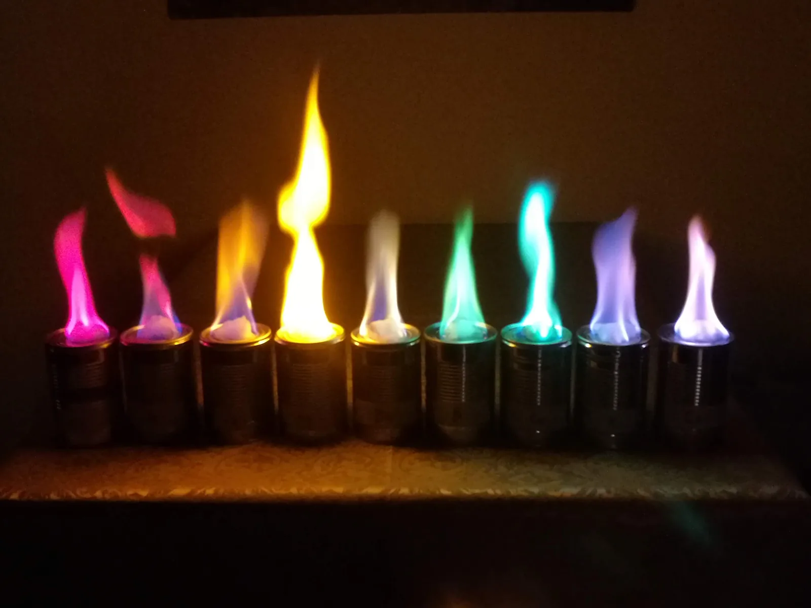
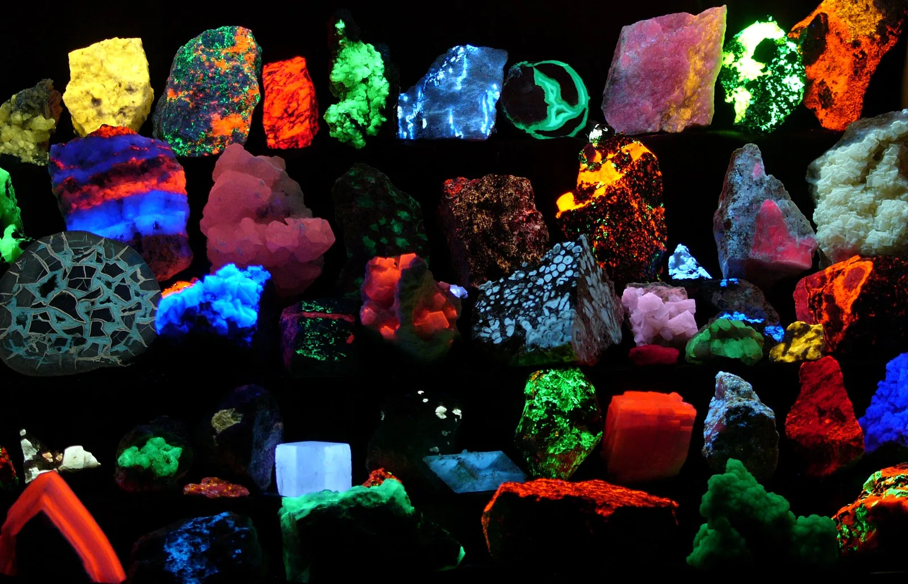

Spektrit paljastavat atomin energiatasot
Miksi Auringon valon sateenkaarivärien poikki kulkee kapeita tummia viivoja, ja miten niistä voidaan päätellä, mitä alkuaineita Auringossa on?
Pohjatiedot
- Fotonin energia on $E = hf = \tfrac{hc}{\lambda}$, joten lyhyempi aallonpituus tarkoittaa suurempaa energiaaluku Valosähköinen ilmiö ja fotoni
- Elektronivoltti on energian yksikkö: $1\,\text{eV} = 1{,}602 \cdot 10^{-19}\,\text{J}$luku Valosähköinen ilmiö ja fotoni
Pohdinta
Kun auringonvalo ohjataan kapeasta raosta prisman tai hilan läpi, siitä syntyy sateenkaariväreinen kaista. Tarkkaan katsottuna kaistan poikki kulkee satoja kapeita tummia viivoja. Samat viivat näkyvät joka päivä samoissa kohdissa, ja osa niistä on täsmälleen siellä, missä laboratorion kuuma vetykaasu tai natriumhöyry lähettää kirkasta valoa.
Miksi tietyt aallonpituudet puuttuvat Auringon valosta, ja miksi juuri ne aallonpituudet, joita kuuma kaasu lähettää?
Kertaa: fotonin energia
Ennusta
Tee ennusteet ennen tutkimista 2 kysymystä
Ennuste 1: viivat tasolle 2
Ennuste 2: kylmä vetykaasu
Tutki
Simulaatio
Käyttöohje
Valitse Tila: emissio tarkoittaa kuumaa vetykaasua, jossa atomi siirtyy ylemmältä tasolta alemmalle ja lähettää fotonin spektroskooppiin; absorptio tarkoittaa lampun valkoista valoa vetykaasun läpi, jolloin atomi absorboi fotonin ja siirtyy alemmalta tasolta ylemmälle. Alempi taso $n_\text{a} = 1$ vastaa kylmää kaasua; suurempi $n_\text{a}$ vastaa kuumaa kaasua, kuten tähden kaasukehää. Valitse Ylempi taso $n_\text{y}$ ja Alempi taso $n_\text{a}$. Energiatasokaaviossa nuoli näyttää siirtymän ja sininen piste elektroniverhon tilan. Alla olevaan spektriin jää viiva jokaisesta siirtymästä, jota kokeilet samassa tilassa: emissiossa kirkas viiva tummalla pohjalla, absorptiossa tumma viiva jatkuvassa spektrissä. Kolmio viivan alla merkitsee valittua siirtymää. Ultravioletti- ja infrapunaviivat on piirretty harmaina, koska silmä ei näe niitä. Tyhjennä spektri poistaa viivat. Nopeus muuttaa vain animaation tahtia.
Mallin oletukset
Vetyatomin energiatasot ovat $E_n = -\tfrac{13{,}6\,\text{eV}}{n^2}$, missä $n = 1, 2, \ldots, 6$; ne ovat mitattuja arvoja, ja niiden alkuperä käsitellään luvussa Vetyatomin energiatasot ja Bohrin malli. Malli näyttää yhden atomin yhden siirtymän kerrallaan; todellisessa kaasussa miljardit atomit tekevät kaikkia mahdollisia siirtymiä yhtä aikaa, ja viivojen kirkkaus riippuu siitä, kuinka usein kukin siirtymä tapahtuu. Kirkkautta malli ei kuvaa. Kylmässä kaasussa atomit ovat käytännössä kaikki perustilassa $n = 1$; mallissa voit silti valita absorptiolle muunkin alemman tason, mikä vastaa kuumaa kaasua, kuten tähden kaasukehää. Aallonpituudet ovat mallin laskemia arvoja.
Laskennan selitys
Fotonin energia on tasojen erotus $\Delta E = E_\text{y} - E_\text{a}$. Aallonpituus on $\lambda = \tfrac{hc}{\Delta E}$, missä $h = 6{,}626 \cdot 10^{-34}\,\text{J}\,\text{s}$, $c = 2{,}998 \cdot 10^8\,\text{m/s}$ ja $\Delta E$ muutetaan jouleiksi kertoimella $1{,}602 \cdot 10^{-19}\,\tfrac{\text{J}}{\text{eV}}$. Spektrin asteikko on $80$–$900\,\text{nm}$; näkyvä valo on katkoviivojen välissä $380$–$750\,\text{nm}$. Infrapunaviiva, joka on yli $900\,\text{nm}$, näkyy nuolena asteikon oikeassa reunassa.
Valitse vetyatomin kaksi energiatasoa ja tila. Seuraa, millainen fotoni syntyy tai absorboituu ja mihin sen viiva tulee spektrissä.
Koe 1: siirtymät tasolle 2
Testaa ennuste 1. Tila on emissio ja alempi taso $n_\text{a} = 2$. Muuta vain ylempää tasoa ja kirjaa fotonin energia ja aallonpituus tasoilla $n_\text{y} = 3$, $4$, $5$ ja $6$. Katso samalla, mihin kohtaan spektriä viivat kertyvät ja miten niiden välit muuttuvat.
Alkutila: tila: emissio, alempi taso $n_\text{a}$ = $2$, ylempi taso $n_\text{y}$ = $3$. Vakiona: tila, alempi taso $n_\text{a}$. Muutetaan: ylempi taso $n_\text{y}$.
| ylempi taso $n_\text{y}$ | $\Delta E$ $(\text{eV})$ | $\lambda$ $(\text{nm})$ |
|---|
Lisää tutkittavaa 3 tehtävää
Koe 2: kylmän kaasun absorptio
Testaa ennuste 2. Tila on absorptio, ja kylmän kaasun atomit ovat perustilassa $n_\text{a} = 1$. Muuta vain ylempää tasoa ja kirjaa fotonin energia ja aallonpituus ainakin tasoilla $n_\text{y} = 2$ ja $3$, halutessasi myös ylemmillä. Mille alueelle tummat viivat tulevat?
Alkutila: tila: absorptio, alempi taso $n_\text{a}$ = $1$, ylempi taso $n_\text{y}$ = $2$. Vakiona: tila, alempi taso $n_\text{a}$. Muutetaan: ylempi taso $n_\text{y}$.
| ylempi taso $n_\text{y}$ | $\Delta E$ $(\text{eV})$ | $\lambda$ $(\text{nm})$ |
|---|
Johtopäätös: mikä määrää viivan paikan?
Kirjoita taulukoidesi perusteella: mikä määrää, mihin kohtaan spektriä viiva tulee? Miksi viivat tasolle $2$ tihenevät lyhyitä aallonpituuksia kohti? Miksi kylmä vetykaasu ei tee tummia viivoja näkyvän valon alueelle?
Mallivastaus
Viivan paikan määrää tasojen energiaero $\Delta E = E_\text{y} - E_\text{a}$: fotonin energia on juuri tämä erotus, ja aallonpituus on $\lambda = \tfrac{hc}{\Delta E}$, joten suurempi ero antaa lyhyemmän aallonpituuden. Kokeessa 1 siirtymät tasoilta $3$–$6$ tasolle $2$ antoivat mallin arvot $656\,\text{nm}$, $486\,\text{nm}$, $434\,\text{nm}$ ja $410\,\text{nm}$; ylimmät tasot ovat lähellä toisiaan, joten energiaero kasvaa yhä vähemmän ja viivat tihenevät. Kokeessa 2 perustilasta lähtevät siirtymät vaativat vähintään $10{,}2\,\text{eV}$:n fotonin, ja aallonpituudet olivat $94$–$122\,\text{nm}$ eli ultraviolettia. Näkyvän valon fotonien energia, noin $1{,}7$–$3{,}3\,\text{eV}$, ei vastaa mitään perustilasta lähtevää erotusta, joten kylmä vety päästää näkyvän valon läpi. Tasojen välimatkat $E_n = -\tfrac{13{,}6\,\text{eV}}{n^2}$ olivat annettua aineistoa, joten koe ei selvittänyt niitä vaan sen, mitä ne tarkoittavat viivojen paikoille.
Arvioi oma vastauksesi
Rastita kohdat, jotka omassa vastauksessasi jo on.
Kertaa asia teoriasta ja harjoittele tehtävillä.
Tunnista kaasu spektristä
Tilastoaineisto · Viivojen aallonpituudet: NIST Atomic Spectra Database (2024), pyöristetty kokonaisiksi nanometreiksi; vain voimakkaimmat näkyvät viivat.
Kuvassa on tuntemattoman lampun emissiospektri. Taulukossa ovat neljän alkuaineen voimakkaimmat näkyvät viivat.
| Alkuaine | Viivat (nm) |
|---|---|
| vety | $410$, $434$, $486$, $656$ |
| helium | $447$, $471$, $502$, $588$, $668$ |
| natrium | $589$ |
| elohopea | $405$, $436$, $546$, $577$, $579$ |
Teoria
Ydinajatus
Jatkuva spektri ja viivaspektri
Spektri syntyy, kun valo hajotetaan aallonpituuksiksi hilalla tai prismalla. Kuuman kiinteän kappaleen, kuten hehkulangan, valosta syntyy jatkuva spektri: kaikki värit punaisesta violettiin yhtenäisenä kaistana. Kuuman ohuen kaasun valossa on vain muutama kirkas väri. Sen spektri on viivaspektri ja tarkemmin emissiospektri: tummalla pohjalla on erillisiä kirkkaita viivoja. Esimerkiksi vetykaasun näkyvät viivat ovat aallonpituuksilla $656\,\text{nm}$, $486\,\text{nm}$, $434\,\text{nm}$ ja $410\,\text{nm}$. Jokaisella alkuaineella on omat viivansa, joten viivat ovat kuin alkuaineen sormenjälki.
Kun jatkuvan spektrin valo kulkee kaasun läpi, spektriin jää tummia viivoja. Tämä on absorptiospektri. Jokainen tumma viiva on täsmälleen samalla aallonpituudella kuin jokin saman kaasun kirkas emissioviiva. Auringon tummat viivat syntyvät näin: Auringon pinnan jatkuva valo kulkee sen kaasukehän läpi, ja kaasukehän atomit absorboivat omat aallonpituutensa.

Energiatilat selittävät viivat
Atomin elektroniverho voi olla vain tietyissä energiatiloissa. Alin niistä on perustila, ylemmät ovat viritystiloja. Energiat ilmoitetaan negatiivisina, koska nollaksi valitaan tilanne, jossa elektroni on irronnut atomista. Kun atomi siirtyy ylemmästä energiatilasta alempaan, se lähettää yhden fotonin. Energia säilyy, joten fotonin energia on tilojen energioiden erotus. Koska atomilla on vain tietyt energiatilat, erotuksia on vain tietty määrä, ja spektrissä on vain tiettyjä viivoja.
Absorptio on käänteinen tapahtuma. Atomi absorboi fotonin vain, jos fotonin energia on täsmälleen jonkin kahden tilan erotus; muut fotonit kulkevat kaasun läpi. Virittynyt atomi palaa pian alempaan tilaan ja lähettää fotonin, mutta satunnaiseen suuntaan. Siksi alkuperäiseen suuntaan kulkevasta valosta puuttuu juuri nuo aallonpituudet, ja spektriin jää tumma viiva. Kaasu absorboi vain siirtymiä, jotka lähtevät tiloista, joissa sen atomeja on. Kylmässä kaasussa lähes kaikki atomit ovat perustilassa, joten absorptioviivoja on vähemmän kuin emissioviivoja. Auringon kaasukehä on niin kuuma, että pieni osa vetyatomeista on ensimmäisessä viritystilassa. Ne absorboivat näkyvän valon aallonpituuksia, ja siksi vedyn punainen viiva $656\,\text{nm}$ näkyy Auringon spektrissä tummana. Elektronin energiatilat ovat kvantittuneet, ja spektrit ovat siitä suorin todiste.
Energiatilojen erotus on välttämätön ehto, mutta kaikki siirtymät eivät ole yhtä todennäköisiä, ja osa niistä on hyvin heikkoja. Siksi kaikkia mahdollisia energiatasojen erotuksia ei välttämättä havaita voimakkaina spektriviivoina. Todelliset spektriviivat eivät myöskään ole äärettömän kapeita: fotonin energian on vastattava tilojen erotusta viivan pienen leveyden tarkkuudella.
Spektrin voi mitata itse. Spektroskoopissa valo kulkee kapean raon ja hilan läpi, ja viivojen aallonpituudet luetaan asteikolta. Puhelimen kameran eteen kiinnitetty hila tai valmis spektrometri toimii samoin: kaasupurkausputken, loisteputken tai LED-lampun valosta näkee heti, onko spektri jatkuva vai viivoista koostuva. Kaasupurkausputki toimii korkealla jännitteellä ja kuumenee, joten sitä käytetään opettajan ohjeiden mukaan eikä siihen kosketa sen ollessa päällä.
Fluoresenssi
Fluoresenssissa aine absorboi lyhytaaltoista valoa, yleensä ultraviolettia, ja lähettää heti pidempiaaltoista näkyvää valoa. Korostuskynän muste hehkuu UV-lampun valossa vihreänä: väriaineen molekyyli virittyy, luovuttaa osan energiasta pienin askelin lämpönä molekyylin värähtelyihin ja palaa sitten perustilaan näkyvän valon fotonia lähettäen. Lähetetyn fotonin energia on pienempi kuin absorboidun, joten sen aallonpituus on pidempi. Spektri siirtyy siis kohti punaista.

Energiatasojen erotus ja fotonin energia
Kun atomi siirtyy energiatilasta toiseen, se lähettää tai absorboi fotonin, jonka energia on tilojen energioiden erotus:
$$\begin{aligned} hf &= E_\text{y} - E_\text{a} \\ \lambda &= \frac{hc}{E_\text{y} - E_\text{a}} \end{aligned}$$
missä $E_\text{y}$ on ylemmän ja $E_\text{a}$ alemman energiatilan energia (J tai eV), ${h = 6{,}626 \cdot 10^{-34}\,\text{J}\,\text{s}}$ Planckin vakio, $f$ fotonin taajuus (Hz), ${c = 2{,}998 \cdot 10^{8}\,\text{m/s}}$ valon nopeus ja $\lambda$ fotonin aallonpituus (m). Alempi rivi saadaan, kun sijoitetaan $f = \tfrac{c}{\lambda}$ ja ratkaistaan $\lambda$. Sama erotus antaa emissioviivan ja absorptioviivan, joten ne ovat samalla aallonpituudella. Suuri energiaero antaa lyhyen aallonpituuden.
Atomien energiat ilmoitetaan usein elektronivoltteina. Ennen sijoitusta yhtälöön, jossa on $h$ ja $c$, elektronivoltit muutetaan jouleiksi: arvo ${1\,\text{eV} = 1{,}602 \cdot 10^{-19}\,\text{J}}$ sijoitetaan elektronivoltin paikalle.
Vetyatomin energiatilat on mitattu sen spektristä. Luvussa Vetyatomin energiatasot ja Bohrin malli nähdään, mistä nämä arvot tulevat.
| $n$ | $E_n$ (eV) |
|---|---|
| 1 | $-13{,}6$ |
| 2 | $-3{,}40$ |
| 3 | $-1{,}51$ |
| 4 | $-0{,}85$ |
| 5 | $-0{,}54$ |
| 6 | $-0{,}38$ |
Vedyn voimakkaimmat näkyvät viivat syntyvät, kun vetyatomi siirtyy tasolta $3$, $4$, $5$ tai $6$ tasolle $2$. Vielä ylemmiltä tasoilta tulee heikkoja viivoja violetin reunalle, esimerkiksi siirtymästä $7 \to 2$ aallonpituudelle $397\,\text{nm}$. Siirtymät perustilaan $n = 1$ ovat paljon suurempia, ja niiden fotonit ovat ultraviolettia.
Yleinen virhekäsitys
Valosähköisessä ilmiössä riittää, että fotonin energia on vähintään irrotustyön suuruinen. Siksi moni ajattelee, että atomikin absorboi kaikki fotonit, joiden energia riittää viritykseen, ja ylimääräinen energia jää jäljelle. Näin ei ole: kun elektroni jää atomiin, fotonin energian on oltava täsmälleen kahden energiatilan erotus. Hieman liian suuren tai liian pienen energian fotoni kulkee kaasun läpi. Ainoa poikkeus on fotoni, jonka energia riittää irrottamaan elektronin kokonaan eli ionisoimaan atomin; silloin ylimääräinen energia jää irronneen elektronin liike-energiaksi.
Toinen virhe on luulla, että absorptiospektrin tumma viiva on täysin pimeä tai että absorboitunut energia katoaa. Atomit lähettävät absorboimansa energian uudelleen, mutta kaikkiin suuntiin, joten viiva on vain ympäristöään tummempi.
Tiivistelmä
- Kuuma kiinteä kappale antaa jatkuvan spektrin. Kuuma ohut kaasu antaa emissiospektrin, jossa on erillisiä kirkkaita viivoja, ja kaasun läpi kulkenut valkoinen valo absorptiospektrin, jonka tummat viivat ovat samoilla aallonpituuksilla kuin osa emissioviivoista.
- Atomin elektroniverho voi olla vain tietyissä energiatiloissa. Siirtymässä syntyvän tai absorboituvan fotonin energia on tilojen erotus: $hf = E_\text{y} - E_\text{a}$ ja $\lambda = \tfrac{hc}{E_\text{y} - E_\text{a}}$.
- Jokaisella alkuaineella on omat viivansa, joten spektristä tunnistetaan, mitä alkuaineita valonlähteessä tai valon matkalla olevassa kaasussa on.
- Fluoresenssissa aine absorboi lyhytaaltoista valoa ja lähettää pidempiaaltoista, koska osa energiasta muuttuu lämmöksi.
Valinnainen Palaa ennusteisiisi
Vertaa ennusteitasi kokeiden mallin arvoihin. Palaa sitten alun kysymykseen: miksi Auringon valosta puuttuu juuri ne aallonpituudet, joita sama kaasu kuumana lähettää? Miksi Auringon spektrissä voi näkyä vedyn punainen viiva $656\,\text{nm}$ tummana, vaikka kylmä vetykaasu ei absorboi näkyvää valoa?
Muuttaisitko ennustettasi?
Valinnainen Kasvihuonekaasut absorboivat infrapunaa
Kasvihuonekaasut ja infrapuna
Myös molekyyleillä on kvantittuneita energiatiloja: niiden atomit värähtelevät toistensa suhteen vain tietyillä energioilla. Hiilidioksidin ja vesihöyryn värähtelytilojen erotukset ovat noin $0{,}08$–$0{,}5\,\text{eV}$. Ne vastaavat infrapunasäteilyä: esimerkiksi hiilidioksidin voimakas absorptiovyö on aallonpituuden $15\,\mu\text{m}$ kohdalla, jossa fotonin energia on noin $0{,}083\,\text{eV}$. Näkyvän valon fotoneille tällaisia erotuksia ei ole, joten suuri osa näkyvästä auringonvalosta läpäisee ilmakehän ja saapuu maanpinnalle, vaikka osa säteilystä absorboituu ja siroaa.
Lämmennyt maanpinta säteilee infrapunaa. Hiilidioksidi- ja vesihöyrymolekyylit absorboivat osan siitä. Energia siirtyy törmäyksissä myös muulle ilmalle, ja ilmakehän kaasut säteilevät infrapunaa kaikkiin suuntiin, myös takaisin alas. Siksi maanpinta pysyy lämpimämpänä kuin ilman näitä kaasuja. Kun ilmakehän hiilidioksidipitoisuus kasvaa, absorptio voimistuu ja maapallon energiatase muuttuu: tämä on ilmastonmuutoksen fysikaalinen ydin.
Esimerkit
Kun olet opiskellut luvun teorian, siirry ohjattuihin esimerkkeihin. Ensimmäisessä seuraat mallilaskua vaihe vaiheelta, seuraavissa teet valinnat itse, ja vihjeet auttavat, jos jäät jumiin.
Esimerkki 1: Neonvalon punainen viiva
Neonvalomainoksen spektrissä on voimakas punaoranssi viiva aallonpituudella $640\,\text{nm}$. Kuinka suuri on niiden neonatomin energiatilojen erotus, joiden välisessä siirtymässä tämä valo syntyy? Anna vastaus elektronivoltteina.
Vaihe 1/7
Tunnetut ja kysytty. Fotonin aallonpituus $\lambda = 640\,\text{nm}$, Planckin vakio $h = 6{,}626 \cdot 10^{-34}\,\text{J}\,\text{s}$ ja valon nopeus $c = 2{,}998 \cdot 10^{8}\,\text{m/s}$. Kysytään energiatilojen erotusta $\Delta E = E_\text{y} - E_\text{a}$ elektronivoltteina.
Vaihe 2/7
Periaate. Atomi lähettää fotonin siirtyessään ylemmästä energiatilasta alempaan. Energia säilyy, joten fotonin energia $hf$ on tilojen energioiden erotus. Taajuus saadaan aallonpituudesta, koska $c = f\lambda$.
Vaihe 3/7
Kaava ratkaistuna. $$\Delta E = hf = \frac{hc}{\lambda}$$
Vaihe 4/7
Yksikkömuunnokset. Aallonpituus metreinä: $640\,\text{nm} = 640 \cdot 10^{-9}\,\text{m}$. Tulos saadaan jouleina, ja se muutetaan elektronivolteiksi sijoittamalla $1\,\text{J} = \tfrac{1}{1{,}602 \cdot 10^{-19}}\,\text{eV}$.
Vaihe 5/7
Sijoitus. Lasketaan ensin tulo
ja sitten energiaero:
$$\begin{aligned} \Delta E &= \frac{hc}{\lambda} \\ &= \frac{1{,}9865 \cdot 10^{-25}\,\text{J}\,\text{m}}{640 \cdot 10^{-9}\,\text{m}} \\ &= 3{,}1039 \cdot 10^{-19}\,\text{J} \\ &= \frac{3{,}1039 \cdot 10^{-19}}{1{,}602 \cdot 10^{-19}}\,\text{eV} \\ &= 1{,}9375\,\text{eV} \end{aligned}$$
Vaihe 6/7
Tulos. Energiatilojen erotus on noin $1{,}94\,\text{eV}$. Tulos ilmoitetaan kolmella merkitsevällä numerolla kuten aallonpituus $640\,\text{nm}$.
Vaihe 7/7
Järkevyys. Näkyvän valon fotonien energiat ovat noin $1{,}7$–$3{,}3\,\text{eV}$, ja punaisen pään fotoneilla energia on pienin, joten $1{,}94\,\text{eV}$ sopii punaoranssille valolle. Tulos on samaa suuruusluokkaa kuin vedyn punaisen viivan $656\,\text{nm}$ energiaero $1{,}89\,\text{eV}$, ja koska $640\,\text{nm}$ on hieman lyhyempi aallonpituus, sen energia on hieman suurempi.
Esimerkki 2: Etsi virhe
Esimerkki 3: Sovella uuteen tilanteeseen
Fluoresoivaa väriainetta valaistaan violetilla taskulampulla, jonka valon aallonpituus on $405\,\text{nm}$. Väriaine lähettää fluoresenssina vihreää valoa, jonka aallonpituus on $530\,\text{nm}$. Oletetaan, että jokainen absorboitu fotoni tuottaa yhden lähetetyn fotonin.
Kuinka paljon energiaa jää väriaineeseen lämmöksi jokaista absorboitua fotonia kohti? Vastaa elektronivoltteina.
Vihje 1: ohjaava kysymys
Energia säilyy: absorboidun fotonin energia jakautuu lähetetyn fotonin energiaan ja lämpöön. Laske ensin kummankin fotonin energia.
Vihje 2: mikä yhteys
Fotonin energia on $E = \tfrac{hc}{\lambda}$. Muuta aallonpituudet metreiksi ja tulos elektronivolteiksi sijoittamalla $1\,\text{eV} = 1{,}602 \cdot 10^{-19}\,\text{J}$.
Vihje 3: välivaihe
Violetin fotonin energia on $3{,}062\,\text{eV}$ ja vihreän $2{,}340\,\text{eV}$. Lämmöksi jää niiden erotus.
Näytä ratkaisu
Annettu
absorboidun fotonin aallonpituus $\lambda_1 = 405\,\text{nm}$, lähetetyn fotonin aallonpituus $\lambda_2 = 530\,\text{nm}$, $h = 6{,}626 \cdot 10^{-34}\,\text{J}\,\text{s}$, $c = 2{,}998 \cdot 10^{8}\,\text{m/s}$, $1\,\text{eV} = 1{,}602 \cdot 10^{-19}\,\text{J}$
Kysytty
lämmöksi jäävä energia $E_\text{lämpö}$ yhtä fotonia kohti elektronivoltteina
Periaate
Fluoresenssissa molekyyli absorboi violetin fotonin ja virittyy, luovuttaa osan energiasta lämpönä ja palaa perustilaan lähettäen vihreän fotonin. Energia säilyy, joten absorboidun fotonin energia on lähetetyn fotonin energian ja lämmön summa. Kummankin fotonin energia saadaan aallonpituudesta.
Kaava
$E_1 = E_2 + E_\text{lämpö}$ ja $E = \dfrac{hc}{\lambda}$, joten
Muunnokset
$405\,\text{nm} = 405 \cdot 10^{-9}\,\text{m}$ ja $530\,\text{nm} = 530 \cdot 10^{-9}\,\text{m}$. Joulet muutetaan elektronivolteiksi jakamalla luvulla $1{,}602 \cdot 10^{-19}\,\tfrac{\text{J}}{\text{eV}}$.
Sijoitus
Vastaus
$0{,}722\,\text{eV}$
Kolme merkitsevää numeroa kuten aallonpituuksissa $405\,\text{nm}$ ja $530\,\text{nm}$.
Järkevyys
Arviolla $hc \approx 1240\,\text{eV}\,\text{nm}$ saadaan $\tfrac{1240}{405}\,\text{eV} \approx 3{,}1\,\text{eV}$ ja $\tfrac{1240}{530}\,\text{eV} \approx 2{,}3\,\text{eV}$, erotus noin $0{,}7\,\text{eV}$. Tulos on positiivinen, kuten pitää: lähetetyn fotonin aallonpituus on pidempi, joten sen energia on pienempi. Noin neljäsosa violetin fotonin energiasta lämmittää väriainetta.
Kertaa luvun käsitteet
Jos valitset Kertaa myöhemmin, kortti siirtyy kertauspakkaasi.
- Jatkuva spektri
- Sisältää yhtenäisen aallonpituusalueen ilman erillisiä spektriviivoja.
- Emissio
- Atomi luovuttaa energiaa fotonina siirtyessään alemmalle energiatasolle.
- Absorptio
- Atomi vastaanottaa sopivan energisen fotonin ja siirtyy korkeammalle energiatasolle.
- Emissiospektri
- Sisältää aallonpituudet, joita virittynyt aine lähettää energiatilojen purkautuessa.
- Absorptiospektri
- Sisältää puuttuvia aallonpituuksia, jotka aine on absorboinut jatkuvasta spektristä.
- Viivaspektri
- Koostuu erillisistä aallonpituuksista ja kertoo aineen kvantittuneista energiatiloista.
- Energiatasokaavio
- Kuvaa järjestelmän sallitut energiat sekä niiden väliset siirtymät.
- Fluoresenssi
- Absorboidun energian jälkeen valo syntyy nopeasti viritystilan purkautuessa.
Tehtävät
Taso 1 · perusharjoitus 8 tehtävää
Yksi kaava tai yksi päättelyaskel. Ydintehtävät ensin, loput lisäharjoitusta.
- Tehtävä 2-1Ydintehtävä
Heliumkaasuputken spektrissä on vihreä viiva aallonpituudella $502\,\text{nm}$. Kuinka suuri on niiden heliumatomin energiatilojen erotus, joiden välinen siirtymä tuottaa tämän viivan? Anna vastaus elektronivoltteina.
Vastaus
$2{,}47\,\text{eV}$
Näytä ratkaisu
Annettu
heliumin viivan aallonpituus $\lambda = 502\,\text{nm}$, $h = 6{,}626 \cdot 10^{-34}\,\text{J}\,\text{s}$, $c = 2{,}998 \cdot 10^{8}\,\text{m/s}$, $1\,\text{eV} = 1{,}602 \cdot 10^{-19}\,\text{J}$
Kysytty
energiatilojen erotus $\Delta E = E_\text{y} - E_\text{a}$ elektronivoltteina
Periaate
Atomi lähettää fotonin siirtyessään ylemmästä energiatilasta alempaan. Energia säilyy, joten fotonin energia $hf$ on tilojen energioiden erotus, ja taajuus saadaan aallonpituudesta yhtälöstä $c = f\lambda$.
Kaava
$\Delta E = hf$ ja $f = \tfrac{c}{\lambda}$, joten $\Delta E = \dfrac{hc}{\lambda}$
Muunnokset
$502\,\text{nm} = 502 \cdot 10^{-9}\,\text{m}$. Tulos jouleina muutetaan elektronivolteiksi jakamalla luvulla $1{,}602 \cdot 10^{-19}\,\tfrac{\text{J}}{\text{eV}}$.
Sijoitus
$hc$$= 6{,}626 \cdot 10^{-34}\,\text{J}\,\text{s} \cdot 2{,}998 \cdot 10^{8}\,\text{m/s}$$= 1{,}9865 \cdot 10^{-25}\,\text{J}\,\text{m}$$\Delta E$$= \dfrac{1{,}9865 \cdot 10^{-25}\,\text{J}\,\text{m}}{502 \cdot 10^{-9}\,\text{m}}$$= 3{,}9571 \cdot 10^{-19}\,\text{J}$$= \dfrac{3{,}9571 \cdot 10^{-19}}{1{,}602 \cdot 10^{-19}}\,\text{eV}$$= 2{,}4701\,\text{eV}$Vastaus
$2{,}47\,\text{eV}$
Kolme merkitsevää numeroa kuten aallonpituudessa $502\,\text{nm}$.
Järkevyys
Arviolla $hc \approx 1240\,\text{eV}\,\text{nm}$ saadaan $\tfrac{1240}{502}\,\text{eV} \approx 2{,}5\,\text{eV}$. Vihreän valon fotonin energia on punaisen ($1{,}9\,\text{eV}$) ja violetin ($3{,}0\,\text{eV}$) välissä, kuten pitää.
- Tehtävä 2-2
Kaasun atomin kahden energiatilan erotus on $2{,}86\,\text{eV}$. Mikä on sen fotonin aallonpituus, jonka atomi lähettää siirtyessään ylemmästä tilasta alempaan? Anna vastaus nanometreinä.
Vastaus
$434\,\text{nm}$
Näytä ratkaisu
Annettu
energiatilojen erotus $\Delta E = 2{,}86\,\text{eV}$, $h = 6{,}626 \cdot 10^{-34}\,\text{J}\,\text{s}$, $c = 2{,}998 \cdot 10^{8}\,\text{m/s}$, $1\,\text{eV} = 1{,}602 \cdot 10^{-19}\,\text{J}$
Kysytty
lähetetyn fotonin aallonpituus $\lambda$ nanometreinä
Periaate
Siirtymässä ylemmästä tilasta alempaan syntyvän fotonin energia on tilojen erotus, koska energia säilyy. Fotonin energian ja aallonpituuden yhdistää $E = \tfrac{hc}{\lambda}$.
Kaava
$\Delta E = \dfrac{hc}{\lambda}$, josta $\lambda = \dfrac{hc}{\Delta E}$
Muunnokset
$\Delta E$$= 2{,}86\,\text{eV}$$= 2{,}86 \cdot 1{,}602 \cdot 10^{-19}\,\text{J}$$= 4{,}5817 \cdot 10^{-19}\,\text{J}$Lopuksi $1\,\text{m} = 10^{9}\,\text{nm}$.
Sijoitus
$hc$$= 6{,}626 \cdot 10^{-34}\,\text{J}\,\text{s} \cdot 2{,}998 \cdot 10^{8}\,\text{m/s}$$= 1{,}9865 \cdot 10^{-25}\,\text{J}\,\text{m}$$\lambda$$= \dfrac{1{,}9865 \cdot 10^{-25}\,\text{J}\,\text{m}}{4{,}5817 \cdot 10^{-19}\,\text{J}}$$= 4{,}3357 \cdot 10^{-7}\,\text{m}$$= 433{,}57\,\text{nm}$Vastaus
$434\,\text{nm}$
Kolme merkitsevää numeroa kuten energiaerossa $2{,}86\,\text{eV}$.
Järkevyys
Arviolla
$\tfrac{1240\,\text{eV}\,\text{nm}}{2{,}86\,\text{eV}}$$\approx 430\,\text{nm}$Aallonpituus on näkyvän valon violetissa päässä, ja se on sama kuin vedyn sinivioletin viivan.
- Tehtävä 2-3
Vedyn punaisen spektriviivan aallonpituus on $656\,\text{nm}$. Mikä on tämän valon taajuus? Anna vastaus yksikössä $10^{14}\,\text{Hz}$.
Vastaus
$4{,}57 \cdot 10^{14}\,\text{Hz}$
Näytä ratkaisu
Annettu
aallonpituus $\lambda = 656\,\text{nm}$, valon nopeus $c = 2{,}998 \cdot 10^{8}\,\text{m/s}$
Kysytty
valon taajuus $f$ yksikössä $10^{14}\,\text{Hz}$
Periaate
Valo on sähkömagneettista aaltoliikettä, joka etenee nopeudella $c$, joten aallonpituus ja taajuus liittyvät toisiinsa aaltoliikkeen perusyhtälöllä.
Kaava
$c = f\lambda$, josta $f = \dfrac{c}{\lambda}$
Muunnokset
$656\,\text{nm} = 656 \cdot 10^{-9}\,\text{m}$. Yksikkö
$\tfrac{\text{m/s}}{\text{m}}$$= \tfrac{1}{\text{s}}$$= \text{Hz}$Sijoitus
$f$$= \dfrac{2{,}998 \cdot 10^{8}\,\text{m/s}}{656 \cdot 10^{-9}\,\text{m}}$$= 4{,}5701 \cdot 10^{14}\,\text{Hz}$Vastaus
$4{,}57 \cdot 10^{14}\,\text{Hz}$
Kolme merkitsevää numeroa kuten aallonpituudessa $656\,\text{nm}$.
Järkevyys
Näkyvän valon taajuudet ovat noin $4 \cdot 10^{14}$–$8 \cdot 10^{14}\,\text{Hz}$, ja punaisella valolla taajuus on pienin, joten $4{,}57 \cdot 10^{14}\,\text{Hz}$ sopii punaiselle viivalle.
- Tehtävä 2-4
Vetyatomin energiatilojen energiat ovat $E_3 = -1{,}51\,\text{eV}$ ja $E_2 = -3{,}40\,\text{eV}$. Kuinka suuri on sen fotonin energia, jonka atomi lähettää siirtyessään tilasta $3$ tilaan $2$? Anna vastaus elektronivoltteina.
Vastaus
$1{,}89\,\text{eV}$
Näytä ratkaisu
Annettu
vetyatomin tilojen energiat $E_3 = -1{,}51\,\text{eV}$ ja $E_2 = -3{,}40\,\text{eV}$
Kysytty
siirtymässä $3 \to 2$ lähetetyn fotonin energia $E_\text{f}$ elektronivoltteina
Periaate
Kun atomi siirtyy ylemmästä tilasta alempaan, sen energia pienenee. Energia säilyy, joten pienentynyt energia lähtee fotonina, ja fotonin energia on tilojen erotus.
Kaava
$E_\text{f}$$= E_\text{y} - E_\text{a}$$= E_3 - E_2$Muunnokset
Ei tarvita: molemmat energiat ovat elektronivoltteina, ja vastaus kysytään elektronivoltteina.
Sijoitus
$E_\text{f}$$= -1{,}51\,\text{eV} - (-3{,}40\,\text{eV})$$= 1{,}89\,\text{eV}$Vastaus
$1{,}89\,\text{eV}$
Sadasosien tarkkuudella kuten tilojen energiat, eli kolme merkitsevää numeroa.
Järkevyys
Energia on positiivinen, koska ylemmän tilan energia $-1{,}51\,\text{eV}$ on suurempi kuin alemman. $1{,}89\,\text{eV}$ on näkyvän valon alueella $1{,}7$–$3{,}3\,\text{eV}$; se on vedyn punaisen viivan $656\,\text{nm}$ fotoni.
- Tehtävä 2-5
Atomin kahden energiatilan erotus on $3{,}03 \cdot 10^{-19}\,\text{J}$. Mikä on siirtymässä syntyvän fotonin aallonpituus? Anna vastaus nanometreinä.
Vastaus
$656\,\text{nm}$
Näytä ratkaisu
Annettu
energiatilojen erotus $\Delta E = 3{,}03 \cdot 10^{-19}\,\text{J}$, $h = 6{,}626 \cdot 10^{-34}\,\text{J}\,\text{s}$, $c = 2{,}998 \cdot 10^{8}\,\text{m/s}$
Kysytty
syntyvän fotonin aallonpituus $\lambda$ nanometreinä
Periaate
Siirtymässä syntyvän fotonin energia on tilojen erotus, koska energia säilyy, ja fotonin energia on $\tfrac{hc}{\lambda}$.
Kaava
$\Delta E = \dfrac{hc}{\lambda}$, josta $\lambda = \dfrac{hc}{\Delta E}$
Muunnokset
Energia on jo jouleina, joten tulos saadaan metreinä. Lopuksi $1\,\text{m} = 10^{9}\,\text{nm}$.
Sijoitus
$hc$$= 6{,}626 \cdot 10^{-34}\,\text{J}\,\text{s} \cdot 2{,}998 \cdot 10^{8}\,\text{m/s}$$= 1{,}9865 \cdot 10^{-25}\,\text{J}\,\text{m}$$\lambda$$= \dfrac{1{,}9865 \cdot 10^{-25}\,\text{J}\,\text{m}}{3{,}03 \cdot 10^{-19}\,\text{J}}$$= 6{,}5560 \cdot 10^{-7}\,\text{m}$$= 655{,}60\,\text{nm}$Vastaus
$656\,\text{nm}$
Kolme merkitsevää numeroa kuten energiaerossa $3{,}03 \cdot 10^{-19}\,\text{J}$.
Järkevyys
$3{,}03 \cdot 10^{-19}\,\text{J}$ on noin $1{,}9\,\text{eV}$, ja $\tfrac{1240}{1{,}9}\,\text{nm} \approx 650\,\text{nm}$. Tulos on punaista valoa, sama kuin vedyn punainen viiva.
- Tehtävä 2-6Ydintehtävä
Oppilas katsoo spektroskoopilla valonlähdettä ja näkee jatkuvan värikaistan, jonka päällä on useita kapeita tummia viivoja. Mikä seuraavista selittää tämän spektrin?
Vastaus
Valo on kulkenut viileämmän kaasun läpi, ja sen atomit ovat absorboineet fotonit, joiden energia on tilojen erotus.
Näytä ratkaisu
Kysytty
mikä selittää jatkuvan värikaistan, jonka päällä on kapeita tummia viivoja.
Periaate
Kaasun atomi voi absorboida vain fotonin, jonka energia on täsmälleen kahden energiatilan erotus. Kun jatkuvaa spektriä lähettävän lähteen valo kulkee lähdettä viileämmän kaasun läpi, näitä fotoneja puuttuu läpi tulleesta valosta, ja spektriin jää tummat viivat niille aallonpituuksille.
Mallivastaus
Tummat viivat syntyvät, kun valo on kulkenut viileämmän kaasun läpi ja kaasun atomit ovat absorboineet ne fotonit, joiden energia on kahden energiatilan erotus. Tällainen spektri on absorptiospektri. Ohuen hehkuvan kaasun valo antaisi päinvastoin kirkkaita viivoja tummalla pohjalla, ja kuuma kiinteä kappale antaisi jatkuvan spektrin ilman viivoja. Tasainen himmeneminen kaikilla aallonpituuksilla ei tekisi kapeita viivoja.
- Tehtävä 2-7
Eri alkuaineiden kaasupurkausputkien spektreissä viivat ovat eri aallonpituuksilla. Selitä lyhyesti kahdella tai kolmella virkkeellä, miksi jokaisella alkuaineella on omat viivansa ja mistä atomien energiatilojen erilaisuus johtuu. Käytä sanoja energiatila, fotoni ja energioiden erotus.
Vastaus
Atomin energiatilat ovat kvantittuneet, ja jokaisen alkuaineen atomeilla on omat energiatilansa, koska ytimen varaus ja elektronien määrä ovat erilaiset. Atomi lähettää fotonin siirtyessään ylemmästä tilasta alempaan, ja fotonin energia on tilojen energioiden erotus. Kun erotukset ovat eri alkuaineilla erilaiset, myös fotonien aallonpituudet ja siis viivat ovat erilaiset.
Näytä ratkaisu
Kysytty
miksi jokaisella alkuaineella on omat spektriviivansa.
Periaate
Atomin energiatilat ovat kvantittuneet, ja siirtymässä ylemmästä tilasta alempaan atomi lähettää fotonin, jonka energia on tilojen energioiden erotus. Viivan aallonpituus määräytyy tästä erotuksesta, joten viivat kertovat atomin energiatiloista.
Mallivastaus
Alkuaineen atomien energiatilat ovat kvantittuneet, ja ne ovat erilaiset eri alkuaineilla, koska ytimen varaus ja elektronien määrä ovat erilaiset (tämä syy vaaditaan: pelkkä toteamus ”tilat ovat erilaiset” ei riitä). Atomi lähettää fotonin siirtyessään ylemmästä energiatilasta alempaan, ja fotonin energia on tilojen energioiden erotus. Koska erotukset ovat eri alkuaineilla erilaiset, myös fotonien aallonpituudet ja siis spektriviivat ovat erilaiset. Siksi alkuaineen voi tunnistaa spektristä kuin sormenjäljestä.
- Tehtävä 2-8
Oppilas ratkaisi tehtävän näin: ”Vetyatomi siirtyy tilasta $n = 2$, jonka energia on $E_2 = -3{,}40\,\text{eV}$, tilaan $n = 3$, jonka energia on $E_3 = -1{,}51\,\text{eV}$. Fotonin energia on tilojen erotus $E_3 - E_2 = -1{,}51\,\text{eV} - (-3{,}40\,\text{eV})$, eli $E_3 - E_2 = 1{,}89\,\text{eV}$, joten atomi lähettää fotonin, jonka energia on $1{,}89\,\text{eV}$.”
Lukuarvo on oikein, mutta johtopäätös ei ole. Mikä oppilaan päättelyssä on virhe?
Vastaus
Siirtymässä ylemmälle tilalle atomin energia kasvaa, joten atomi absorboi fotonin eikä lähetä sitä.
Näytä ratkaisu
Kysytty
mikä oppilaan päättelyssä on virhe, kun hän päättelee siirtymän $n = 2 \to n = 3$ lähettävän fotonin.
Periaate
Tilan $n = 3$ energia $-1{,}51\,\text{eV}$ on suurempi kuin tilan $n = 2$ energia $-3{,}40\,\text{eV}$, joten siirtymässä atomin energia kasvaa. Energia säilyy, joten kasvun täytyy tulla jostakin: atomi ottaa sen vastaan absorboimalla fotonin. Fotoni lähtee atomista vain siirtymässä ylemmästä tilasta alempaan.
Mallivastaus
Erotuksen lukuarvo $1{,}89\,\text{eV}$ on oikein, mutta siirtymässä alemmasta tilasta ylempään atomi absorboi fotonin eikä lähetä sitä. Fotonin energian täytyy olla täsmälleen tämä erotus. Fotonin energia on tilojen erotus eikä summa, ja erotusta ei jaeta Planckin vakiolla, koska erotus on jo fotonin energia. Energia $1{,}89\,\text{eV}$ on näkyvää punaista valoa eikä liian pieni valoksi.
Taso 2 · soveltava harjoitus 8 tehtävää
Kaksi vaihetta, mittausaineiston käsittely, yksikkömuunnos tai kaavan ratkaiseminen. Ydintehtävät ensin, loput lisäharjoitusta.
- Tehtävä 2-9Ydintehtävä
Vetyatomi siirtyy tilasta $n = 4$, jonka energia on $-0{,}85\,\text{eV}$, tilaan $n = 2$, jonka energia on $-3{,}40\,\text{eV}$. Mikä on syntyvän fotonin aallonpituus? Anna vastaus nanometreinä.
Vastaus
$486\,\text{nm}$
Näytä ratkaisu
Annettu
vetyatomin tilojen energiat $E_4 = -0{,}85\,\text{eV}$ ja $E_2 = -3{,}40\,\text{eV}$, $h = 6{,}626 \cdot 10^{-34}\,\text{J}\,\text{s}$, $c = 2{,}998 \cdot 10^{8}\,\text{m/s}$, $1\,\text{eV} = 1{,}602 \cdot 10^{-19}\,\text{J}$
Kysytty
syntyvän fotonin aallonpituus $\lambda$ nanometreinä
Periaate
Atomin energia pienenee siirtymässä tilasta $4$ tilaan $2$. Energia säilyy, joten fotonin energia on tilojen erotus, ja aallonpituus saadaan fotonin energiasta.
Kaava
$E_4 - E_2 = \dfrac{hc}{\lambda}$, josta $\lambda = \dfrac{hc}{E_4 - E_2}$
Muunnokset
$E_4 - E_2$$= -0{,}85\,\text{eV} - (-3{,}40\,\text{eV})$$= 2{,}55\,\text{eV}$$= 2{,}55 \cdot 1{,}602 \cdot 10^{-19}\,\text{J}$$= 4{,}0851 \cdot 10^{-19}\,\text{J}$Lopuksi $1\,\text{m} = 10^{9}\,\text{nm}$.
Sijoitus
$hc$$= 6{,}626 \cdot 10^{-34}\,\text{J}\,\text{s} \cdot 2{,}998 \cdot 10^{8}\,\text{m/s}$$= 1{,}9865 \cdot 10^{-25}\,\text{J}\,\text{m}$$\lambda$$= \dfrac{1{,}9865 \cdot 10^{-25}\,\text{J}\,\text{m}}{4{,}0851 \cdot 10^{-19}\,\text{J}}$$= 4{,}8627 \cdot 10^{-7}\,\text{m}$$= 486{,}27\,\text{nm}$Vastaus
$486\,\text{nm}$
Kolme merkitsevää numeroa kuten energiaerossa $2{,}55\,\text{eV}$.
Järkevyys
Arviolla $hc \approx 1240\,\text{eV}\,\text{nm}$ saadaan
$\tfrac{1240\,\text{eV}\,\text{nm}}{2{,}55\,\text{eV}}$$\approx 490\,\text{nm}$ja viiva näkyy sinivihreänä eli syaanina. Siirtymä tasolta $4$ on suurempi kuin tasolta $3$ (punainen $656\,\text{nm}$), joten aallonpituus on lyhyempi.
- Tehtävä 2-10
Malliatomilla on kolme energiatilaa: perustila $0$ sekä viritystilat $1{,}85\,\text{eV}$ ja $4{,}00\,\text{eV}$. Kuuma kaasu, jossa on tällaisia atomeja, lähettää kolmea eri viivaa. Mikä on viivoista pisimmän aallonpituus? Anna vastaus nanometreinä.
Vastaus
$670\,\text{nm}$
Näytä ratkaisu
Annettu
malliatomin energiatilat $E_1 = 0$, $E_2 = 1{,}85\,\text{eV}$ ja $E_3 = 4{,}00\,\text{eV}$, $h = 6{,}626 \cdot 10^{-34}\,\text{J}\,\text{s}$, $c = 2{,}998 \cdot 10^{8}\,\text{m/s}$, $1\,\text{eV} = 1{,}602 \cdot 10^{-19}\,\text{J}$
Kysytty
pisimmän viivan aallonpituus $\lambda_\text{max}$ nanometreinä
Periaate
Jokainen tilapari antaa yhden viivan, jonka fotonin energia on tilojen erotus. Aallonpituus on kääntäen verrannollinen energiaan, joten pisin aallonpituus syntyy pienimmästä erotuksesta. Erotukset ovat $E_2 - E_1 = 1{,}85\,\text{eV}$, $E_3 - E_2 = 2{,}15\,\text{eV}$ ja $E_3 - E_1 = 4{,}00\,\text{eV}$, joten pienin on $1{,}85\,\text{eV}$.
Kaava
$\Delta E_\text{min}$$= \dfrac{hc}{\lambda_\text{max}}$josta
$\lambda_\text{max}$$= \dfrac{hc}{\Delta E_\text{min}}$Muunnokset
$\Delta E_\text{min}$$= 1{,}85\,\text{eV}$$= 1{,}85 \cdot 1{,}602 \cdot 10^{-19}\,\text{J}$$= 2{,}9637 \cdot 10^{-19}\,\text{J}$Lopuksi $1\,\text{m} = 10^{9}\,\text{nm}$.
Sijoitus
$hc$$= 6{,}626 \cdot 10^{-34}\,\text{J}\,\text{s} \cdot 2{,}998 \cdot 10^{8}\,\text{m/s}$$= 1{,}9865 \cdot 10^{-25}\,\text{J}\,\text{m}$$\lambda_\text{max}$$= \dfrac{1{,}9865 \cdot 10^{-25}\,\text{J}\,\text{m}}{2{,}9637 \cdot 10^{-19}\,\text{J}}$$= 6{,}7027 \cdot 10^{-7}\,\text{m}$$= 670{,}27\,\text{nm}$Vastaus
$670\,\text{nm}$
Kolme merkitsevää numeroa kuten energiassa $1{,}85\,\text{eV}$.
Järkevyys
Muut viivat ovat $\tfrac{1240}{2{,}15}\,\text{nm} \approx 577\,\text{nm}$ ja $\tfrac{1240}{4{,}00}\,\text{nm} \approx 310\,\text{nm}$, molemmat lyhyempiä. Pisin viiva on punainen, kuten pienimmän energian fotonille kuuluu.
- Tehtävä 2-11
Huoneenlämpöisen vetykaasun atomit ovat perustilassa, jonka energia on $-13{,}6\,\text{eV}$. Seuraava energiatila on $-3{,}40\,\text{eV}$. Minkä aallonpituuden valoa kaasu absorboi, kun atomi siirtyy perustilasta tähän tilaan? Anna vastaus nanometreinä.
Vastaus
$122\,\text{nm}$
Näytä ratkaisu
Annettu
vetyatomin perustilan energia $E_1 = -13{,}6\,\text{eV}$ ja seuraavan tilan energia $E_2 = -3{,}40\,\text{eV}$, $h = 6{,}626 \cdot 10^{-34}\,\text{J}\,\text{s}$, $c = 2{,}998 \cdot 10^{8}\,\text{m/s}$, $1\,\text{eV} = 1{,}602 \cdot 10^{-19}\,\text{J}$
Kysytty
absorboituvan valon aallonpituus $\lambda$ nanometreinä
Periaate
Atomi absorboi fotonin vain, jos fotonin energia on täsmälleen kahden tilan erotus. Perustilasta tilaan $2$ siirtyminen vaatii siis fotonin, jonka energia on $E_2 - E_1$.
Kaava
$E_2 - E_1 = \dfrac{hc}{\lambda}$, josta $\lambda = \dfrac{hc}{E_2 - E_1}$
Muunnokset
$E_2 - E_1$$= -3{,}40\,\text{eV} - (-13{,}6\,\text{eV})$$= 10{,}2\,\text{eV}$$= 10{,}2 \cdot 1{,}602 \cdot 10^{-19}\,\text{J}$$= 1{,}6340 \cdot 10^{-18}\,\text{J}$Lopuksi $1\,\text{m} = 10^{9}\,\text{nm}$.
Sijoitus
$hc$$= 6{,}626 \cdot 10^{-34}\,\text{J}\,\text{s} \cdot 2{,}998 \cdot 10^{8}\,\text{m/s}$$= 1{,}9865 \cdot 10^{-25}\,\text{J}\,\text{m}$$\lambda$$= \dfrac{1{,}9865 \cdot 10^{-25}\,\text{J}\,\text{m}}{1{,}6340 \cdot 10^{-18}\,\text{J}}$$= 1{,}2157 \cdot 10^{-7}\,\text{m}$$= 121{,}57\,\text{nm}$Vastaus
$122\,\text{nm}$
Kolme merkitsevää numeroa kuten perustilan energiassa $-13{,}6\,\text{eV}$.
Järkevyys
$10{,}2\,\text{eV}$ on yli kolme kertaa näkyvän valon fotonin energia, joten aallonpituus on alle kolmasosa näkyvän valon aallonpituuksista: ultraviolettia. Siksi kylmä vetykaasu on näkyvälle valolle läpinäkyvää.
- Tehtävä 2-12
Natriumhöyryn keltaisen valon taajuus on $5{,}09 \cdot 10^{14}\,\text{Hz}$. Kuinka suuri on niiden natriumatomin energiatilojen erotus, joiden välinen siirtymä tuottaa tämän valon? Anna vastaus elektronivoltteina.
Vastaus
$2{,}11\,\text{eV}$
Näytä ratkaisu
Annettu
natriumin valon taajuus $f = 5{,}09 \cdot 10^{14}\,\text{Hz}$, $h = 6{,}626 \cdot 10^{-34}\,\text{J}\,\text{s}$, $1\,\text{eV} = 1{,}602 \cdot 10^{-19}\,\text{J}$
Kysytty
energiatilojen erotus $\Delta E$ elektronivoltteina
Periaate
Energia säilyy siirtymässä, joten lähetetyn fotonin energia on tilojen erotus. Fotonin energia on Planckin vakio kertaa taajuus.
Kaava
$\Delta E = hf$
Muunnokset
$\text{Hz} = \tfrac{1}{\text{s}}$, joten $\text{J}\,\text{s} \cdot \text{Hz} = \text{J}$. Tulos jouleina muutetaan elektronivolteiksi jakamalla luvulla $1{,}602 \cdot 10^{-19}\,\tfrac{\text{J}}{\text{eV}}$.
Sijoitus
$\Delta E$$= 6{,}626 \cdot 10^{-34}\,\text{J}\,\text{s} \cdot 5{,}09 \cdot 10^{14}\,\text{Hz}$$= 3{,}3726 \cdot 10^{-19}\,\text{J}$$= \dfrac{3{,}3726 \cdot 10^{-19}}{1{,}602 \cdot 10^{-19}}\,\text{eV}$$= 2{,}1053\,\text{eV}$Vastaus
$2{,}11\,\text{eV}$
Kolme merkitsevää numeroa kuten taajuudessa $5{,}09 \cdot 10^{14}\,\text{Hz}$.
Järkevyys
Taajuutta vastaava aallonpituus on
$\tfrac{2{,}998 \cdot 10^{8}\,\text{m/s}}{5{,}09 \cdot 10^{14}\,\text{Hz}}$$\approx 589\,\text{nm}$natriumin keltainen viiva, ja $\tfrac{1240}{589}\,\text{eV} \approx 2{,}1\,\text{eV}$.
- Tehtävä 2-13Ydintehtävä
Tuntemattoman kaasupurkauslampun spektristä mitattiin spektroskoopilla kolme kirkasta viivaa: $435{,}7\,\text{nm}$ (violetti), $546{,}3\,\text{nm}$ (vihreä) ja $577{,}2\,\text{nm}$ (keltainen). Taulukossa on neljän alkuaineen kirkkaimpien emissioviivojen aallonpituudet (esimerkkiaineisto).
a) Mikä alkuaine lampussa on? Perustele vertaamalla kaikkia kolmea viivaa taulukkoon.
b) Kuinka suuri on lampun vihreän viivan fotonin energia? Anna vastaus elektronivoltteina.
Vastauslaatikkoon tulee kohdan b) tulos.
Alkuaineiden emissioviivat, esimerkkiaineisto Alkuaine $\lambda_1\,(\text{nm})$ $\lambda_2\,(\text{nm})$ $\lambda_3\,(\text{nm})$ $\lambda_4\,(\text{nm})$ Vety 410,2 434,0 486,1 656,3 Helium 447,1 501,6 587,6 667,8 Natrium 498,3 568,8 589,0 616,1 Elohopea 404,7 435,8 546,1 577,0 Vastaus
$2{,}27\,\text{eV}$
Näytä ratkaisu
Annettu
mitatut viivat $435{,}7\,\text{nm}$, $546{,}3\,\text{nm}$ ja $577{,}2\,\text{nm}$, taulukosta alkuaineiden viivat, $h = 6{,}626 \cdot 10^{-34}\,\text{J}\,\text{s}$, $c = 2{,}998 \cdot 10^{8}\,\text{m/s}$, $1\,\text{eV} = 1{,}602 \cdot 10^{-19}\,\text{J}$
Kysytty
a) alkuaine, b) vihreän viivan fotonin energia $E$ elektronivoltteina
Periaate
Jokaisella alkuaineella on omat viivansa, koska energiatilat ovat erilaiset, joten alkuaine tunnistetaan vertaamalla kaikkia mitattuja viivoja taulukkoon. Elohopean taulukkoarvot $435{,}8\,\text{nm}$, $546{,}1\,\text{nm}$ ja $577{,}0\,\text{nm}$ poikkeavat mitatuista enintään $0{,}2\,\text{nm}$. Vedyn viiva $434{,}0\,\text{nm}$ on lähellä ensimmäistä viivaa, mutta vedyllä ei ole viivaa $546\,\text{nm}$:n eikä $577\,\text{nm}$:n lähellä, eikä heliumilla tai natriumilla ole kolmea sopivaa viivaa. Lampussa on siis elohopeaa. Fotonin energia on $hf = \tfrac{hc}{\lambda}$.
Kaava
$E = hf = \dfrac{hc}{\lambda}$
Muunnokset
$546{,}3\,\text{nm} = 546{,}3 \cdot 10^{-9}\,\text{m}$. Tulos jouleina muutetaan elektronivolteiksi jakamalla luvulla $1{,}602 \cdot 10^{-19}\,\tfrac{\text{J}}{\text{eV}}$.
Sijoitus
$hc$$= 6{,}626 \cdot 10^{-34}\,\text{J}\,\text{s} \cdot 2{,}998 \cdot 10^{8}\,\text{m/s}$$= 1{,}9865 \cdot 10^{-25}\,\text{J}\,\text{m}$$E$$= \dfrac{1{,}9865 \cdot 10^{-25}\,\text{J}\,\text{m}}{546{,}3 \cdot 10^{-9}\,\text{m}}$$= 3{,}6362 \cdot 10^{-19}\,\text{J}$$= \dfrac{3{,}6362 \cdot 10^{-19}}{1{,}602 \cdot 10^{-19}}\,\text{eV}$$= 2{,}2698\,\text{eV}$Vastaus
a) lampussa on elohopeaa, koska kaikki kolme viivaa täsmäävät sen taulukkoarvoihin; b) $2{,}27\,\text{eV}$, kolme merkitsevää numeroa kuten aallonpituudessa $546{,}3\,\text{nm}$.
Järkevyys
Arviolla
$\tfrac{1240\,\text{eV}\,\text{nm}}{546{,}3\,\text{nm}}$$\approx 2{,}27\,\text{eV}$Vihreän valon fotonin energia on punaisen ($1{,}9\,\text{eV}$) ja violetin ($3{,}0\,\text{eV}$) välissä, kuten pitää.
- Tehtävä 2-14
Auringon spektristä, jossa on kirkkaalla jatkuvalla taustalla tummia viivoja, mitattiin seitsemän tummaa viivaa (esimerkkiaineisto). Vertailuna ovat alkuaineiden viivojen aallonpituudet: vety $434{,}0\,\text{nm}$, $486{,}1\,\text{nm}$ ja $656{,}3\,\text{nm}$, kalsium (kalsiumioni) $393{,}4\,\text{nm}$, magnesium $518{,}4\,\text{nm}$ ja natrium $589{,}0\,\text{nm}$.
a) Mitkä viivat A–G voi tunnistaa ja mitä alkuaineita Auringon ilmakehässä siis on? Miksi viivat ovat tummia? Mikä viivoista jää tunnistamatta?
b) Vedyn viivat syntyvät, kun atomi nousee tilasta $n = 2$, jonka energia on $-3{,}40\,\text{eV}$, ylemmälle tilalle. Mikä on sen tilan energia, jolle atomi nousee absorboidessaan viivan C fotonin? Anna vastaus elektronivoltteina.
Vastauslaatikkoon tulee kohdan b) tulos.
Auringon absorptiospektrin tummat viivat, esimerkkiaineisto Viiva $\lambda\,(\text{nm})$ A 393,5 B 434,1 C 486,0 D 518,3 E 527,1 F 589,1 G 656,4 Vastaus
$-0{,}85\,\text{eV}$
Näytä ratkaisu
Annettu
viivan C aallonpituus $\lambda = 486{,}0\,\text{nm}$, alemman tilan energia $E_2 = -3{,}40\,\text{eV}$, $h = 6{,}626 \cdot 10^{-34}\,\text{J}\,\text{s}$, $c = 2{,}998 \cdot 10^{8}\,\text{m/s}$, $1\,\text{eV} = 1{,}602 \cdot 10^{-19}\,\text{J}$
Kysytty
a) tunnistetut alkuaineet, b) ylemmän tilan energia $E_\text{y}$ elektronivoltteina
Periaate
Tummat viivat ovat absorptiospektri: Auringon viileämmän ilmakehän atomit absorboivat fotonit, joiden energia on kahden energiatilan erotus, ja viivat ovat samoilla aallonpituuksilla kuin saman alkuaineen emissioviivat. Viivat B, C ja G ovat vedyn, A kalsiumin (kalsiumionin viiva), D magnesiumin ja F natriumin viivoja, joten ilmakehässä on näitä alkuaineita. Viiva E ($527{,}1\,\text{nm}$) ei vastaa mitään vertailuviivaa. Absorptiossa atomin energia kasvaa fotonin energian verran.
Kaava
$E_\text{y} - E_2$$= \dfrac{hc}{\lambda}$josta
$E_\text{y}$$= E_2 + \dfrac{hc}{\lambda}$Muunnokset
$486{,}0\,\text{nm} = 486{,}0 \cdot 10^{-9}\,\text{m}$. Joulet muutetaan elektronivolteiksi jakamalla luvulla $1{,}602 \cdot 10^{-19}\,\tfrac{\text{J}}{\text{eV}}$.
Sijoitus
$\dfrac{hc}{\lambda}$$= \dfrac{6{,}626 \cdot 10^{-34}\,\text{J}\,\text{s} \cdot 2{,}998 \cdot 10^{8}\,\text{m/s}}{486{,}0 \cdot 10^{-9}\,\text{m}}$$= 4{,}0874 \cdot 10^{-19}\,\text{J}$$= 2{,}5514\,\text{eV}$$E_\text{y}$$= -3{,}40\,\text{eV} + 2{,}5514\,\text{eV}$$= -0{,}8486\,\text{eV}$Vastaus
a) viivat B, C ja G ovat vedyn, A kalsiumin, D magnesiumin ja F natriumin; viivat ovat tummia, koska Auringon viileämmän ilmakehän atomit absorboivat nämä aallonpituudet jatkuvasta spektristä, ja viiva E jää tunnistamatta; b) $-0{,}85\,\text{eV}$, sadasosien tarkkuudella kuten tilan energia $-3{,}40\,\text{eV}$.
Järkevyys
Energia on suurempi kuin $-3{,}40\,\text{eV}$ ja pienempi kuin nolla, jossa elektroni irtoaisi, kuten absorptiossa kuuluu. Se on vedyn tilan $n = 4$ energia, koska $-13{,}6\,\text{eV} : 16 = -0{,}85\,\text{eV}$.
- Tehtävä 2-15
Oppilas tutkii spektroskoopilla kahta valonlähdettä: hehkulamppua ja elohopeakaasupurkausputkea. Spektroskoopin okulaarin asteikon lukema $x$ on millimetreinä.
a) Millaisen spektrin oppilas näkee kummastakin lähteestä ja miten ne erottaa toisistaan?
b) Asteikko kalibroidaan elohopeaputken tunnetuilla viivoilla (taulukko, esimerkkiaineisto). Toisessa putkessa on tuntematon kaasu, ja sen sinivihreän viivan kohdalla lukema on $x = 16{,}4\,\text{mm}$. Piirrä kalibrointikuvaaja $(x, \lambda)$, sovita siihen suora ja määritä viivan aallonpituus nanometreinä.
Vastauslaatikkoon tulee kohdan b) tulos.
Elohopean viivat ja asteikon lukemat, esimerkkiaineisto $\lambda\,(\text{nm})$ $x\,(\text{mm})$ 404,7 8,7 435,8 11,4 546,1 20,5 577,0 23,1 Vastaus
$497\,\text{nm}$
Näytä ratkaisu
Annettu
elohopean viivat ja asteikon lukemat taulukosta, tuntemattoman viivan lukema $x = 16{,}4\,\text{mm}$
Kysytty
a) lähteiden spektrit ja niiden erottaminen, b) tuntemattoman viivan aallonpituus $\lambda$ nanometreinä
Periaate
Hehkulamppu lähettää jatkuvan spektrin eli yhtenäisen värikaistan ilman erillisiä viivoja, kun taas kaasupurkausputken ohut kaasu lähettää viivaspektrin: erillisiä kirkkaita viivoja tummalla pohjalla. Spektroskoopin asteikko on lähes lineaarinen: sovitetun suoran poikkeamat mittapisteistä ovat enintään $0{,}8\,\text{nm}$, mikä on pieni verrattuna $173\,\text{nm}$:n mittausalueeseen. Siksi aallonpituus on asteikon lukeman lineaarinen funktio $\lambda = kx + b$. Tunnetut elohopean viivat kalibroivat asteikon, ja tuntematon viiva luetaan sovitetulta suoralta.
Kuvaajan lukeminen
Kuvaajan pisteet $(x, \lambda)$ ovat elohopean neljä viivaa: $(8{,}7\,\text{mm}; 404{,}7\,\text{nm})$ ja $(23{,}1\,\text{mm}; 577{,}0\,\text{nm})$ rajaavat mittausalueen. Pisteet asettuvat likimain suoralle mutta eivät täsmälleen sille, koska asteikon lukeminen on epätarkkaa. Suora piirretään pisteiden lomaan, ja sen kulmakerroin luetaan kahdesta suoralta valitusta pisteestä, joista toinen on kuvaajan alalaidassa ja toinen yläpäässä. Sovitetun suoran yhtälö on
$\lambda$$= 12{,}01\,\tfrac{\text{nm}}{\text{mm}} \cdot x + 299{,}6\,\text{nm}$Tuntemattoman viivan aallonpituus luetaan suoralta kohdasta $x = 16{,}4\,\text{mm}$.
Kaava
$\lambda = kx + b$
Muunnokset
Ei tarvita: lukema on millimetreinä ja kulmakerroin on yksikössä $\tfrac{\text{nm}}{\text{mm}}$, joten tulos tulee suoraan nanometreinä.
Sijoitus
$\lambda$$= 12{,}01\,\tfrac{\text{nm}}{\text{mm}} \cdot 16{,}4\,\text{mm} + 299{,}6\,\text{nm}$$= 496{,}6\,\text{nm}$Vastaus
a) hehkulamppu antaa jatkuvan spektrin ja elohopeaputki viivaspektrin; b) $497\,\text{nm}$, kolme merkitsevää numeroa kuten lukemassa $16{,}4\,\text{mm}$ ja aallonpituuksissa.
Järkevyys
Arvo on elohopean viivojen $435{,}8\,\text{nm}$ ja $546{,}1\,\text{nm}$ välissä, ja lukema $16{,}4\,\text{mm}$ on niiden lukemien $11{,}4\,\text{mm}$ ja $20{,}5\,\text{mm}$ välissä. Pelkästään näitä kahta pistettä käyttävä interpolointi antaa
$435{,}8\,\text{nm} + 12{,}1\,\tfrac{\text{nm}}{\text{mm}} \cdot 5{,}0\,\text{mm}$$= 496{,}3\,\text{nm}$eli sama tulos. Aallonpituus on sinivihreää valoa kuten tehtävässä.
- Tehtävä 2-16
Malliatomilla on neljä energiatilaa, joiden energiat ovat esimerkkiarvoja.
Perustila: $E_1 = -5{,}00\,\text{eV}$
Viritystila: $E_2 = -2{,}50\,\text{eV}$
Viritystila: $E_3 = -2{,}00\,\text{eV}$
Viritystila: $E_4 = -0{,}60\,\text{eV}$
Näistä atomeista koostuva kaasu on huoneenlämpöistä, joten lähes kaikki sen atomit ovat perustilassa. Hehkulampun valo johdetaan kaasun läpi, ja läpi tullut valo tutkitaan spektroskoopilla näkyvän valon alueella $380$–$720\,\text{nm}$. Käytä arvoa $hc = 1240\,\text{eV}\,\text{nm}$.
Mikä kuva esittää havaittua spektriä?
Vastaus
Spektri C
Näytä ratkaisu
Kysytty
mikä neljästä spektristä on huoneenlämpöisen kaasun läpi kulkeneen hehkulampun valon spektri alueella $380$–$720\,\text{nm}$.
Periaate
Hehkulamppu antaa jatkuvan spektrin. Kaasun atomi absorboi fotonin vain, jos fotonin energia on täsmälleen kahden energiatilan erotus, ja se voi lähteä vain tilasta, jossa atomeja on. Huoneenlämpöisessä kaasussa lähes kaikki atomit ovat perustilassa, joten absorptioviivat syntyvät vain perustilasta lähtevistä siirtymistä. Viivan aallonpituus on $\lambda = \dfrac{hc}{E_\text{y} - E_\text{a}}$.
Mallivastaus
Oikea on spektri C. Perustilasta lähtevien siirtymien energiat ja aallonpituudet ovat
$E_2 - E_1 = (-2{,}50 + 5{,}00)\,\text{eV}$
$E_2 - E_1 = 2{,}50\,\text{eV}$
$\lambda_{12} = 1240\,\text{eV}\,\text{nm} : 2{,}50\,\text{eV}$
$\lambda_{12} \approx 496\,\text{nm}$
$E_3 - E_1 = (-2{,}00 + 5{,}00)\,\text{eV}$
$E_3 - E_1 = 3{,}00\,\text{eV}$
$\lambda_{13} = 1240\,\text{eV}\,\text{nm} : 3{,}00\,\text{eV}$
$\lambda_{13} \approx 413\,\text{nm}$
$E_4 - E_1 = (-0{,}60 + 5{,}00)\,\text{eV}$
$E_4 - E_1 = 4{,}40\,\text{eV}$
$\lambda_{14} = 1240\,\text{eV}\,\text{nm} : 4{,}40\,\text{eV}$
$\lambda_{14} \approx 282\,\text{nm}$
Viiva $282\,\text{nm}$ on ultraviolettia eikä näy tutkitulla alueella, joten jatkuvassa värikaistassa on kaksi tummaa viivaa, kohdissa $413\,\text{nm}$ ja $496\,\text{nm}$. Spektrin A viivat ovat kirkkaita mustalla pohjalla, joten ne ovat emissioviivoja eli kaasun itse lähettämää valoa, eivät sen läpi kulkenutta valoa. Läpi tulleessa valossa absorboidut aallonpituudet näkyvät tummina viivoina jatkuvassa värikaistassa. Spektrin B viiva $653\,\text{nm}$ tulee siirtymästä $2 \to 4$, joka alkaa viritystilasta. Siinä tilassa ei kylmässä kaasussa ole atomeja. Spektri D syntyisi, jos atomi absorboisi kaikki fotonit, joiden energia on vähintään $2{,}50\,\text{eV}$. Atomi absorboi kuitenkin vain fotonit, joiden energia on täsmälleen tilojen erotus.
Taso 3 · haastava 5 tehtävää
Valinnaisia: soveltamista, kaksi ideaa yhdessä tai uusi tilanne, jossa päättelet itse.
- Tehtävä 2-17
Vedyn näkyvät spektriviivat syntyvät, kun atomi siirtyy ylemmältä tasolta tasolle $n = 2$, jonka energia on $-3{,}40\,\text{eV}$. Mitä ylempää tasoa käytetään, sitä lyhyempi on viivan aallonpituus, mutta viivat eivät koskaan ylitä tiettyä rajaa. Hyvin ylhäällä olevien tasojen energia on lähes nolla.
Mikä on tämän sarjan lyhin mahdollinen aallonpituus? Anna vastaus nanometreinä.
Vastaus
$365\,\text{nm}$
Näytä ratkaisu
Annettu
loppumistason energia $E_2 = -3{,}40\,\text{eV}$, hyvin ylhäällä olevien tasojen energia lähes $E_\infty = 0$, $h = 6{,}626 \cdot 10^{-34}\,\text{J}\,\text{s}$, $c = 2{,}998 \cdot 10^{8}\,\text{m/s}$, $1\,\text{eV} = 1{,}602 \cdot 10^{-19}\,\text{J}$
Kysytty
sarjan lyhin aallonpituus $\lambda_\text{min}$ nanometreinä
Periaate
Viivan fotonin energia on tilojen erotus $E_\text{y} - E_2$. Mitä ylempi taso, sitä suurempi energia, mutta ylempi energia ei voi ylittää arvoa $0$, jossa elektroni irtoaa atomista. Suurin mahdollinen erotus on siis $0 - E_2$, ja se antaa lyhimmän aallonpituuden, jota kohti viivat tihenevät.
Kaava
$0 - E_2$$= \dfrac{hc}{\lambda_\text{min}}$josta
$\lambda_\text{min}$$= \dfrac{hc}{0 - E_2}$Muunnokset
$0 - E_2$$= 3{,}40\,\text{eV}$$= 3{,}40 \cdot 1{,}602 \cdot 10^{-19}\,\text{J}$$= 5{,}4468 \cdot 10^{-19}\,\text{J}$Lopuksi $1\,\text{m} = 10^{9}\,\text{nm}$.
Sijoitus
$hc$$= 6{,}626 \cdot 10^{-34}\,\text{J}\,\text{s} \cdot 2{,}998 \cdot 10^{8}\,\text{m/s}$$= 1{,}9865 \cdot 10^{-25}\,\text{J}\,\text{m}$$\lambda_\text{min}$$= \dfrac{1{,}9865 \cdot 10^{-25}\,\text{J}\,\text{m}}{5{,}4468 \cdot 10^{-19}\,\text{J}}$$= 3{,}6470 \cdot 10^{-7}\,\text{m}$$= 364{,}70\,\text{nm}$Vastaus
$365\,\text{nm}$
Kolme merkitsevää numeroa kuten energiassa $-3{,}40\,\text{eV}$.
Järkevyys
Raja on lyhyempi kuin sarjan lyhin näkyvä viiva $410\,\text{nm}$, kuten pitää, ja juuri näkyvän alueen ($380\,\text{nm}$) alapuolella: sarjan viimeiset viivat ovat ultraviolettia.
- Tehtävä 2-18
Ilmakehän hiilidioksidi absorboi voimakkaasti infrapunasäteilyä, jonka aallonpituus on $15{,}0\,\mu\text{m}$. Absorptio syntyy, kun molekyyli siirtyy värähtelytilasta toiseen. Kuinka suuri on näiden värähtelytilojen energiaero? Anna vastaus millielektronivoltteina ($1\,\text{meV} = 10^{-3}\,\text{eV}$).
Vastaus
$82{,}7\,\text{meV}$
Näytä ratkaisu
Annettu
hiilidioksidin absorboiman säteilyn aallonpituus $\lambda = 15{,}0\,\mu\text{m}$, $h = 6{,}626 \cdot 10^{-34}\,\text{J}\,\text{s}$, $c = 2{,}998 \cdot 10^{8}\,\text{m/s}$, $1\,\text{eV} = 1{,}602 \cdot 10^{-19}\,\text{J}$
Kysytty
värähtelytilojen energiaero $\Delta E$ millielektronivoltteina
Periaate
Molekyylin värähtelyn energia on kvantittunut kuten atomin elektroniverhon energia. Molekyyli absorboi fotonin vain, jos fotonin energia on täsmälleen kahden tilan erotus, joten erotus saadaan absorboituvan säteilyn aallonpituudesta.
Kaava
$\Delta E = hf = \dfrac{hc}{\lambda}$
Muunnokset
$15{,}0\,\mu\text{m} = 15{,}0 \cdot 10^{-6}\,\text{m}$. Joulet muutetaan elektronivolteiksi jakamalla luvulla $1{,}602 \cdot 10^{-19}\,\tfrac{\text{J}}{\text{eV}}$ ja elektronivoltit millielektronivolteiksi sijoittamalla $1\,\text{eV} = 1000\,\text{meV}$.
Sijoitus
$hc$$= 6{,}626 \cdot 10^{-34}\,\text{J}\,\text{s} \cdot 2{,}998 \cdot 10^{8}\,\text{m/s}$$= 1{,}9865 \cdot 10^{-25}\,\text{J}\,\text{m}$$\Delta E$$= \dfrac{1{,}9865 \cdot 10^{-25}\,\text{J}\,\text{m}}{15{,}0 \cdot 10^{-6}\,\text{m}}$$= 1{,}3243 \cdot 10^{-20}\,\text{J}$$= \dfrac{1{,}3243 \cdot 10^{-20}}{1{,}602 \cdot 10^{-19}}\,\text{eV}$$= 0{,}082666\,\text{eV}$$= 82{,}666\,\text{meV}$Vastaus
$82{,}7\,\text{meV}$
Kolme merkitsevää numeroa kuten aallonpituudessa $15{,}0\,\mu\text{m}$.
Järkevyys
Aallonpituus on $30$ kertaa näkyvän valon $500\,\text{nm}$, joten energia on noin kolmaskymmenesosa sen fotonin energiasta $2{,}5\,\text{eV}$: $2{,}5\,\text{eV} : 30 \approx 0{,}083\,\text{eV}$. Näin pienellä energiaerolla molekyyli ei voi absorboida näkyvää valoa tästä tilasta, mutta maanpinnan infrapunasäteilyä se absorboi.
- Tehtävä 2-19
Väriaineen molekyyli absorboi UV-fotonin, jonka aallonpituus on $365\,\text{nm}$. Molekyyli palaa perustilaan kahdessa vaiheessa: ensin se lähettää infrapunafotonin, jonka energia on $1{,}20\,\text{eV}$, ja sitten toisen fotonin, jolla se päätyy perustilaan. Oletetaan, ettei energiaa siirry lämmöksi.
Mikä on toisen fotonin aallonpituus? Anna vastaus nanometreinä.
Vastaus
$564\,\text{nm}$
Näytä ratkaisu
Annettu
absorboidun UV-fotonin aallonpituus $\lambda_\text{UV} = 365\,\text{nm}$, ensimmäisen lähetetyn fotonin energia $E_1 = 1{,}20\,\text{eV}$, $h = 6{,}626 \cdot 10^{-34}\,\text{J}\,\text{s}$, $c = 2{,}998 \cdot 10^{8}\,\text{m/s}$, $1\,\text{eV} = 1{,}602 \cdot 10^{-19}\,\text{J}$
Kysytty
toisen lähetetyn fotonin aallonpituus $\lambda_2$ nanometreinä
Periaate
Molekyyli palaa samaan perustilaan eikä energiaa siirry lämmöksi, joten energian säilymisen mukaan kahden lähetetyn fotonin energioiden summa on absorboidun fotonin energia.
Kaava
$E_\text{UV}$$= \dfrac{hc}{\lambda_\text{UV}}$$= E_1 + \dfrac{hc}{\lambda_2}$josta
$\lambda_2$$= \dfrac{hc}{\tfrac{hc}{\lambda_\text{UV}} - E_1}$Muunnokset
$365\,\text{nm} = 365 \cdot 10^{-9}\,\text{m}$; elektronivoltit ja joulet muunnetaan sijoittamalla $1\,\text{eV} = 1{,}602 \cdot 10^{-19}\,\text{J}$.
Sijoitus
$hc$$= 6{,}626 \cdot 10^{-34}\,\text{J}\,\text{s} \cdot 2{,}998 \cdot 10^{8}\,\text{m/s}$$= 1{,}9865 \cdot 10^{-25}\,\text{J}\,\text{m}$$E_\text{UV}$$= \dfrac{1{,}9865 \cdot 10^{-25}\,\text{J}\,\text{m}}{365 \cdot 10^{-9}\,\text{m}}$$= 5{,}4424 \cdot 10^{-19}\,\text{J}$$= 3{,}3973\,\text{eV}$$E_2$$= 3{,}3973\,\text{eV} - 1{,}20\,\text{eV}$$= 2{,}1973\,\text{eV}$$= 3{,}5200 \cdot 10^{-19}\,\text{J}$$\lambda_2$$= \dfrac{1{,}9865 \cdot 10^{-25}\,\text{J}\,\text{m}}{3{,}5200 \cdot 10^{-19}\,\text{J}}$$= 5{,}6434 \cdot 10^{-7}\,\text{m}$$= 564{,}34\,\text{nm}$Vastaus
$564\,\text{nm}$
Kolme merkitsevää numeroa kuten aallonpituudessa $365\,\text{nm}$ ja energiassa $1{,}20\,\text{eV}$.
Järkevyys
Toisen fotonin energia $2{,}2\,\text{eV}$ on pienempi kuin UV-fotonin, joten aallonpituus on pidempi: kellanvihreää valoa. Arvio: $\tfrac{1240}{1{,}20}\,\text{nm} \approx 1030\,\text{nm}$ on infrapunaa, kuten tehtävässä sanotaan, ja $1{,}2\,\text{eV} + \tfrac{1240}{564}\,\text{eV} \approx 3{,}4\,\text{eV}$ on absorboidun fotonin energia.
- Tehtävä 2-20
Malliatomissa on perustila ja kolme viritystilaa, ja kaikki kuusi siirtymää tilojen välillä ovat mahdollisia. Kuuma kaasu, jossa on tällaisia atomeja, lähettää kuutta viivaa. Niistä viisi mitattiin (taulukko, esimerkkiaineisto). Kuudes viiva syntyy alimmalta viritystilalta perustilaan. Se on viivoista aallonpituudeltaan pisin ja niin kaukana infrapunassa, ettei ilmaisin havaitse sitä.
a) Laske mitattujen viivojen fotonien energiat elektronivoltteina.
b) Päättele viritystilojen energiat perustilan yläpuolella ja piirrä atomin energiatasokaavio, johon merkitset, mikä viiva on mikin siirtymä.
c) Mikä on kuudennen viivan aallonpituus? Perustele päättelysi.
Vastauslaatikkoon tulee kohdan c) tulos nanometreinä.
Malliatomin mitatut emissioviivat, esimerkkiaineisto Viiva $\lambda\,(\text{nm})$ A 318 B 443 C 517 D 827 E 954 Vastaus
$1{,}13 \cdot 10^{3}\,\text{nm}$
Näytä ratkaisu
Annettu
viivojen aallonpituudet $318\,\text{nm}$, $443\,\text{nm}$, $517\,\text{nm}$, $827\,\text{nm}$ ja $954\,\text{nm}$, kuudes viiva syntyy alimmalta viritystilalta perustilaan ja on pisin, $h = 6{,}626 \cdot 10^{-34}\,\text{J}\,\text{s}$, $c = 2{,}998 \cdot 10^{8}\,\text{m/s}$, $1\,\text{eV} = 1{,}602 \cdot 10^{-19}\,\text{J}$
Kysytty
a) viivojen fotonien energiat, b) viritystilojen energiat ja tasokaavio, c) kuudennen viivan aallonpituus $\lambda_6$ nanometreinä
Periaate
Jokainen viiva on kahden tilan erotus $\tfrac{hc}{\lambda}$. Viritystilojen energiat perustilasta ovat $E_1 < E_2 < E_3$, ja kuusi viivaa ovat $E_1$, $E_2$, $E_3$, $E_2 - E_1$, $E_3 - E_2$ ja $E_3 - E_1$. Lyhin aallonpituus on suurin energia $E_3$. Kuudes viiva on siirtymä $E_1 \to 0$ eli energia $E_1$, joten sitä ei ole mitattujen joukossa. Pareilla $E_1$ ja $E_3 - E_1$ sekä $E_2$ ja $E_3 - E_2$ on kummallakin summa $E_3$; koska $E_1$ puuttuu, sen pari $E_3 - E_1$ on mitattu ilman paria, ja toinen pari on mitattu kokonaan.
Kaava
$E = \dfrac{hc}{\lambda}$ ja $E_1 = E_3 - (E_3 - E_1)$, josta $\lambda_6 = \dfrac{hc}{E_1}$
Muunnokset
$1\,\text{nm} = 10^{-9}\,\text{m}$; joulet muutetaan elektronivoltteiksi jakamalla luvulla $1{,}602 \cdot 10^{-19}\,\tfrac{\text{J}}{\text{eV}}$.
Sijoitus
a) $hc = 1{,}9865 \cdot 10^{-25}\,\text{J}\,\text{m}$, joten viivojen A–E energiat ovat $3{,}90\,\text{eV}$, $2{,}80\,\text{eV}$, $2{,}40\,\text{eV}$, $1{,}50\,\text{eV}$ ja $1{,}30\,\text{eV}$. b) Suurin energia on $E_3 = 3{,}90\,\text{eV}$. Summa $2{,}40\,\text{eV} + 1{,}50\,\text{eV} = 3{,}90\,\text{eV}$, joten tämä pari on $E_2$ ja $E_3 - E_2$. Jäljelle jäävät $2{,}80\,\text{eV}$ ja $1{,}30\,\text{eV}$. Energia $2{,}80\,\text{eV}$ on $E_3 - E_1$, jolloin
$E_1$$= 3{,}90\,\text{eV} - 2{,}80\,\text{eV}$$= 1{,}10\,\text{eV}$eikä tätä viivaa ole mitattu, kuten kuudennen viivan pitää olla. Tarkistus:
$E_2 - E_1$$= 2{,}40\,\text{eV} - 1{,}10\,\text{eV}$$= 1{,}30\,\text{eV}$on mitattu viiva E. Tasot ovat siis $1{,}10\,\text{eV}$, $2{,}40\,\text{eV}$ ja $3{,}90\,\text{eV}$ perustilan yläpuolella. Siirtymät: A $3{,}90\,\text{eV}$ on $E_3 \to 0$; B $2{,}80\,\text{eV}$ on $E_3 \to E_1$; C $2{,}40\,\text{eV}$ on $E_2 \to 0$; D $1{,}50\,\text{eV}$ on $E_3 \to E_2$; E $1{,}30\,\text{eV}$ on $E_2 \to E_1$; kuudes viiva on $E_1 \to 0$. c)
$\lambda_6$$= \dfrac{1{,}9865 \cdot 10^{-25}\,\text{J}\,\text{m}}{1{,}10 \cdot 1{,}602 \cdot 10^{-19}\,\text{J}}$$= 1{,}127 \cdot 10^{-6}\,\text{m}$$= 1127\,\text{nm}$Vastaus
a) $3{,}90\,\text{eV}$, $2{,}80\,\text{eV}$, $2{,}40\,\text{eV}$, $1{,}50\,\text{eV}$, $1{,}30\,\text{eV}$; b) viritystilat $1{,}10\,\text{eV}$, $2{,}40\,\text{eV}$ ja $3{,}90\,\text{eV}$ perustilan yläpuolella; c) $1{,}13 \cdot 10^{3}\,\text{nm}$ ($1127\,\text{nm}$), kolme merkitsevää numeroa kuten mitatuissa aallonpituuksissa.
Järkevyys
Peilikuvatasojärjestelmä $1{,}50\,\text{eV}$, $2{,}80\,\text{eV}$, $3{,}90\,\text{eV}$ sopisi samoihin viiteen energiaan, mutta silloin puuttuva viiva olisi $E_3 - E_2 = 1{,}10\,\text{eV}$ eikä siirtymä alimmalta viritystilalta perustilaan, ja alimman tilan siirtymä perustilaan ($1{,}50\,\text{eV}$) olisi mitattu; tämä on ristiriidassa tehtävänannon kanssa. Välit $1{,}10\,\text{eV}$, $1{,}30\,\text{eV}$ ja $1{,}50\,\text{eV}$ summautuvat arvoon $3{,}90\,\text{eV}$, ja kaikki viisi mitattua viivaa löytyvät tasoista. Aallonpituus on pidempi kuin pisin mitattu $954\,\text{nm}$ ja yli $780\,\text{nm}$, eli infrapunaa, kuten tehtävässä sanotaan.
- Tehtävä 2-21
Kolmea fluoresoivaa väriainetta valaistaan lyhytaaltoisella valolla, ja mitataan, minkä aallonpituuden valoa kukin väriaine säteilee (esimerkkiaineisto). Oletetaan, että jokaista absorboitua fotonia kohti väriaine lähettää yhden fluoresenssifotonin ja että energia, joka ei lähde fotonina, muuttuu lämmöksi.
a) Laske kunkin väriaineen absorboiman ja lähettämän fotonin energiat elektronivoltteina.
b) Missä väriaineessa lämmöksi muuttuva osuus on suurin, ja kuinka monta prosenttia absorboidun fotonin energiasta se on?
c) Selitä, miksi fluoresenssivalon aallonpituus on pidempi kuin absorboidun valon ja minne puuttuva energia joutuu.
d) Neljäs väriaine D absorboi aallonpituuden $400\,\text{nm}$ valoa, ja jokaista absorboitua fotonia kohti $0{,}50\,\text{eV}$ muuttuu lämmöksi. Mikä on sen fluoresenssivalon aallonpituus nanometreinä?
Vastauslaatikkoon tulee kohdan b) osuus prosentteina.
Väriaineiden valaistus ja fluoresenssi, esimerkkiaineisto Väriaine $\lambda_\text{abs}\,(\text{nm})$ $\lambda_\text{fl}\,(\text{nm})$ A 365 450 B 405 520 C 450 530 Vastaus
$22{,}1\,\%$
Näytä ratkaisu
Annettu
absorboitu valo $\lambda_\text{abs}$ ja fluoresenssivalo $\lambda_\text{fl}$: A $365\,\text{nm}$ ja $450\,\text{nm}$, B $405\,\text{nm}$ ja $520\,\text{nm}$, C $450\,\text{nm}$ ja $530\,\text{nm}$, $h = 6{,}626 \cdot 10^{-34}\,\text{J}\,\text{s}$, $c = 2{,}998 \cdot 10^{8}\,\text{m/s}$, $1\,\text{eV} = 1{,}602 \cdot 10^{-19}\,\text{J}$
Kysytty
lämmöksi muuttuvan energian osuus $p$ absorboidun fotonin energiasta prosentteina, suurin kolmesta
Periaate
Väriaine absorboi fotonin ja lähettää yhden fluoresenssifotonin. Energia säilyy, joten absorboidun fotonin energia on lähetetyn fotonin energia ja lämmöksi muuttuva energia $Q$ yhteensä. Fluoresenssifotoni on pidempiaaltoinen, joten sen energia on pienempi.
Kaava
$E = \dfrac{hc}{\lambda}$,
$Q$$= E_\text{abs} - E_\text{fl}$$p$$= \dfrac{Q}{E_\text{abs}}$$= 1 - \dfrac{\lambda_\text{abs}}{\lambda_\text{fl}}$Muunnokset
$1\,\text{nm} = 10^{-9}\,\text{m}$; joulet muutetaan elektronivoltteiksi jakamalla luvulla $1{,}602 \cdot 10^{-19}\,\tfrac{\text{J}}{\text{eV}}$. Osuudessa $p$ vakiot $h$ ja $c$ supistuvat pois.
Sijoitus
Väriaineen B energiat ovat
$E_\text{abs}$$= \dfrac{1{,}9865 \cdot 10^{-25}\,\text{J}\,\text{m}}{405 \cdot 10^{-9}\,\text{m}}$$= 3{,}0617\,\text{eV}$$E_\text{fl}$$= \dfrac{1{,}9865 \cdot 10^{-25}\,\text{J}\,\text{m}}{520 \cdot 10^{-9}\,\text{m}}$$= 2{,}3846\,\text{eV}$joten
$Q$$= 0{,}6771\,\text{eV}$$p$$= \dfrac{0{,}6771\,\text{eV}}{3{,}0617\,\text{eV}}$$= 0{,}2211$$= 22{,}11\,\%$Kohdassa d)
$E_\text{abs}$$= \dfrac{1{,}9865 \cdot 10^{-25}\,\text{J}\,\text{m}}{400 \cdot 10^{-9}\,\text{m}}$$= 3{,}1000\,\text{eV}$$E_\text{fl}$$= 3{,}1000\,\text{eV} - 0{,}50\,\text{eV}$$= 2{,}6000\,\text{eV}$$\lambda_\text{fl}$$= \dfrac{1{,}9865 \cdot 10^{-25}\,\text{J}\,\text{m}}{2{,}6000 \cdot 1{,}602 \cdot 10^{-19}\,\text{J}}$$= 4{,}769 \cdot 10^{-7}\,\text{m}$$= 477\,\text{nm}$Väriaineille A ja C vastaavat energiat ovat $3{,}397\,\text{eV}$ ja $2{,}756\,\text{eV}$ sekä $2{,}756\,\text{eV}$ ja $2{,}340\,\text{eV}$, ja osuudet $1 - \tfrac{365}{450} = 0{,}189$ ja $1 - \tfrac{450}{530} = 0{,}151$.
Vastaus
$22{,}1\,\%$
Väriaineessa B, kolme merkitsevää numeroa kuten aallonpituuksissa. Muissa osuus on pienempi. Väriaineen D fluoresenssivalon aallonpituus on $477\,\text{nm}$ (kohta d).
Järkevyys
Arvio
$1 - \tfrac{405}{520}$$\approx 1 - 0{,}78$$= 0{,}22$antaa saman tuloksen. Fluoresenssifotonin energia $2{,}38\,\text{eV}$ on pienempi kuin absorboidun $3{,}06\,\text{eV}$, kuten pidempiaaltoisen valon pitää olla.
Mallivastaus
Absorboinut molekyyli on viritystilassa. Ennen fotonin lähettämistä osa sen energiasta muuttuu molekyylin ja ympäristön lämpöliikkeen energiaksi, joten lähetetyn fotonin energia on pienempi kuin absorboidun. Pienempi energia tarkoittaa pidempää aallonpituutta, koska $E = \tfrac{hc}{\lambda}$.
Testaa ja arvioi
1. Pohdintatehtävä
Vastaa ensin itse ja avaa vastaus vasta sitten.
- Kaasun atomilla on kolme energiatilaa: $0$, $2{,}0\,\text{eV}$ ja $3{,}0\,\text{eV}$. Kuinka monta eri spektriviivaa kuuma kaasu voi lähettää, ja mitkä ovat niiden fotonien energiat?
Vastaus
Kolme viivaa, yksi jokaista tilaparia kohti. Fotonien energiat ovat tilojen erotukset: $3{,}0\,\text{eV} - 2{,}0\,\text{eV} = 1{,}0\,\text{eV}$, $2{,}0\,\text{eV} - 0 = 2{,}0\,\text{eV}$ ja $3{,}0\,\text{eV} - 0 = 3{,}0\,\text{eV}$.
- Tavallisessa fluoresenssissa aine absorboi yhden fotonin ja lähettää yhden fotonin, eikä se saa lisäenergiaa muualta. Fluoresoiva aine absorboi sinistä valoa, jonka aallonpituus on $450\,\text{nm}$. Voiko se tällaisessa fluoresenssissa lähettää violettia valoa, jonka aallonpituus on $400\,\text{nm}$? Perustele energian avulla.
Vastaus
Ei voi. Fotonin energia on $E = \tfrac{hc}{\lambda}$, joten $400\,\text{nm}$:n fotonin energia on suurempi kuin $450\,\text{nm}$:n fotonin. Tavallisessa fluoresenssissa energiaa ei tule muualta, ja osa absorboidun fotonin energiasta muuttuu lämmöksi, joten lähetetyn fotonin energia on pienempi ja aallonpituus pidempi kuin absorboidun. Lyhyemmän aallonpituuden emissio on mahdollista vain erikoistapauksissa, joissa lisäenergiaa saadaan muualta, esimerkiksi kahdesta absorboidusta fotonista.
2. Käsitetehtävä
3. Laskutehtävä: Laske energiaero
Loisteputkessa on elohopeahöyryä, jonka spektrissä on kirkas vihreä viiva aallonpituudella $546\,\text{nm}$. Kuinka suuri on niiden elohopea-atomin energiatilojen erotus, joiden välinen siirtymä tuottaa tämän valon? Vastaa elektronivoltteina.
Vihje 1: ohjaava kysymys
Fotonin energia on tilojen energioiden erotus.
Vihje 2: mikä yhteys
$\Delta E = \tfrac{hc}{\lambda}$, kun $\lambda$ on metreinä.
Vihje 3: välivaihe
Tulos jouleina on $3{,}638 \cdot 10^{-19}\,\text{J}$; muuta se elektronivolteiksi.
Näytä ratkaisu
Annettu
elohopean viivan aallonpituus $\lambda = 546\,\text{nm}$, $h = 6{,}626 \cdot 10^{-34}\,\text{J}\,\text{s}$, $c = 2{,}998 \cdot 10^{8}\,\text{m/s}$, $1\,\text{eV} = 1{,}602 \cdot 10^{-19}\,\text{J}$
Kysytty
energiatilojen erotus $\Delta E = E_\text{y} - E_\text{a}$ elektronivoltteina
Periaate
Elohopea-atomi lähettää fotonin siirtyessään ylemmästä energiatilasta alempaan. Energia säilyy, joten fotonin energia on tilojen erotus, ja fotonin energia saadaan aallonpituudesta.
Kaava
$\Delta E = hf$ ja $f = \tfrac{c}{\lambda}$, joten $\Delta E = \dfrac{hc}{\lambda}$
Muunnokset
$546\,\text{nm} = 546 \cdot 10^{-9}\,\text{m}$. Tulos jouleina muutetaan elektronivolteiksi jakamalla luvulla $1{,}602 \cdot 10^{-19}\,\tfrac{\text{J}}{\text{eV}}$.
Sijoitus
Vastaus
$2{,}27\,\text{eV}$
Kolme merkitsevää numeroa kuten aallonpituudessa $546\,\text{nm}$.
Järkevyys
Arviolla $hc \approx 1240\,\text{eV}\,\text{nm}$ saadaan $\tfrac{1240}{546}\,\text{eV} \approx 2{,}3\,\text{eV}$. Vihreä valo on näkyvän alueen keskellä, ja $2{,}3\,\text{eV}$ on punaisen $1{,}9\,\text{eV}$:n ja violetin $3{,}0\,\text{eV}$:n välissä.
Ehdotus: yksi vastaus ei vielä kerro koko osaamistasi, mutta kertaa asia teoriasta ja tee ydintehtävät.
Valinnainen 4. Selitystehtävä: Selitä ja siirrä
Helium löydettiin vuonna 1868 Auringon spektristä ennen kuin sitä oli löydetty Maasta: spektrissä oli keltainen viiva aallonpituudella, jota yhdenkään tunnetun alkuaineen spektrissä ei ollut. Selitä energiatilojen avulla, miksi tämä viiva oli todiste uudesta alkuaineesta.
Mallivastaus
Jokaisen alkuaineen atomeilla on omat energiatilansa, ja spektriviivan aallonpituus määräytyy kahden tilan erotuksesta: $\lambda = \tfrac{hc}{E_\text{y} - E_\text{a}}$. Saman alkuaineen kaikki atomit tuottavat aina samat viivat, ja eri alkuaineiden tilat ja siksi viivat ovat erilaiset. Kun Auringon spektrissä oli viiva, jota yhdenkään tunnetun alkuaineen viivoissa ei ollut, sen täytyi syntyä atomeista, joiden energiatilat poikkeavat kaikista tunnetuista. Myöhemmin heliumkaasu löydettiin myös Maasta, ja sen spektrissä oli sama viiva.
Arvioi oma vastauksesi
Rastita kohdat, jotka omassa vastauksessasi jo on.
Kertaa asia teoriasta ja harjoittele tehtävillä.
Arvioi, mitä opit
Arvioi tehtävistä saamasi palautteen ja oman käsityksesi perusteella. Arviot tulevat mukaan luvun tehtävien palautukseen.
Valokuvat
- Coloured flames of methanol solutions of metal salts and compounds. Hegelrast. lähde, CC BY-SA 4.0
- Buildings with colorful neon street signs at blue hour, Shinjuku, Tokyo. Basile Morin. lähde, CC BY-SA 4.0
- Fluorescent minerals hg. Hannes Grobe/AWI. lähde, CC BY-SA 2.5